The trip
The route, the four beds, the driving — and where each base sits on the river that connects them.
Four beds, eleven nights, three moves.
Hub and spoke. You unpack four times in twelve days, and eight of them start and end in the same bed. The car exists to reach trailheads, villages and whales — inside Montréal and Québec City it stays parked from the moment you arrive until the morning you leave.


Where we are, day by dayTwelve dates · where you sleep · the day in one line›
The quick-reference table. If someone asks where you'll be on the 31st, this is the answer.
| Day | Date | Where you are | Sleep | The day in one line |
|---|---|---|---|---|
| 0 | Wed Aug 26 | Cheshire → Lincoln, NH | Lincoln, NH | Out of the driveway at 6 p.m.; in bed in the White Mountains by 10:45. |
| 1 | Thu Aug 27 | Franconia Notch, NH | Lincoln, NH | Franconia Ridge Loop — 9 miles, 1.7 of them above treeline. |
| 2 | Fri Aug 28 | NH → Eastern Townships → Montréal | Plateau / Mile End | Border, Gregorian chant at the abbey, Bota Bota, MUTEK. |
| 3 | Sat Aug 29 | Old Montréal | Plateau / Mile End | Notre-Dame, Pointe-à-Callière, then MUTEK. |
| 4 | Sun Aug 30 | Mile End → Mount Royal → east end | Plateau / Mile End | Bagels, Jean-Talon, Tam-Tams, the Oratory, MUTEK closing night. |
| 5 | Mon Aug 31 | Chemin du Roy: Trois-Rivières, Deschambault | Québec City | The oldest road in Canada, with two deliberate stops. |
| 6 | Tue Sep 1 | Old Québec, on foot | Québec City | Walls, Citadelle, the Plains, the cathedral, ferry at sunset. |
| 7 | Wed Sep 2 | Côte-de-Beaupré + Île d'Orléans | Québec City | Montmorency, Sainte-Anne-de-Beaupré, the canyon, the island loop. |
| 8 | Thu Sep 3 | Lower Town + Wendake | Québec City | Musée de la civilisation, the Huron-Wendat, Onhwa' Lumina. |
| 9 | Fri Sep 4 | Québec → Baie-Sainte-Catherine → Route 362 | Baie-Saint-Paul | Whales. Then the balcony road home in golden light. |
| 10 | Sat Sep 5 | Hautes-Gorges-de-la-Rivière-Malbaie | Baie-Saint-Paul | Eight hundred metres of rock wall, and a boat on the floor of it. |
| 11 | Sun Sep 6 | Baie-Saint-Paul → Cheshire | Home | 915 km in one push. Out by 5:30 a.m. |
Bases in short: Lincoln NH ×2 nights (Aug 26–27) · Montréal ×3 (Aug 28–30) · Québec City ×4 (Aug 31 – Sep 3) · Baie-Saint-Paul ×2 (Sep 4–5). Home the night of Sunday Sep 6; Labour Day Monday is a recovery day.
The drive itself, leg by legNine legs · ≈2,400 km · distances, times and the two that need care›
| Leg | Distance | Driving | Notes |
|---|---|---|---|
| Cheshire → Lincoln, NH Wed 26th, 6:00 p.m. | ≈245 mi / 395 km | 4 h 00 – 4 h 30 · 4 h 28 measured | Night drive, arrive ≈10:15–10:45 p.m. Two corridors: I-91 N through Vermont, or I-93 N via Manchester/Concord. Lockbox self check-in at 36 Lodge Road, so no desk to reach. |
| Lincoln → Lafayette Place | 9 mi / 15 km | 16–20 min | Northbound hiker lot — the big one, and no doubling back. Park by 7:00 a.m. |
| Lincoln → Saint-Benoît-du-Lac, QC | ≈130 mi / 205 km | 2 h 45 + border · 2 h 38 measured | I-93 N → I-91 N → cross at Derby Line / Stanstead → A-55 N. |
| Abbey → Montréal | ≈80 mi / 130 km | 1 h 30 · 1 h 50 measured | A-10 W. Park the car and leave it. |
| Montréal → Québec City (Chemin du Roy) | ≈170 mi / 275 km | 3 h direct · 5–6 h with stops · 3 h 34 measured | A-40 E with deliberate stops at Trois-Rivières and Deschambault. |
| Québec City → Baie-Sainte-Catherine | ≈130 mi / 210 km | 2 h 30 · 2 h 55 measured | Rte 138 E. Whale pier. Free 10-min ferry to Tadoussac. |
| Return via Route 362 → Baie-Saint-Paul | ≈75 mi / 120 km | 1 h 45 with stops · 1 h 53 measured | The balcony road. Golden hour on the descents. |
| Baie-Saint-Paul → Hautes-Gorges | ≈40 mi / 65 km | 1 h 15 · 1 h 03 measured | Rte 138 → St-Aimé-des-Lacs → park road. |
| Baie-Saint-Paul → Cheshire | ≈570 mi / 915 km | 10 h 30 – 11 h + border · 10 h 53 measured | The one genuinely long day. Two drivers, 5:30 a.m. start. |
All times are dry-road, no-traffic planning figures. Re-check with live navigation and Québec 511 the morning of.
Every base is one step further down the St. Lawrence.
Montréal sits where the rapids stopped the boats. Québec City sits 275 km downstream where the river narrows to under a kilometre beneath a cliff. Charlevoix sits where it widens again, and Tadoussac where it has gone salt and a fjord comes in from the north. That is the order of the trip, and it is why the whales are at the end and not the beginning.
Where each base sits, and why the river put it thereTwo minutes · the geography behind the itinerary›
Two hundred million years of erosion made the mountains; one ice sheet made everything you will actually look at. At its maximum the Laurentide buried the White Mountains whole — Mount Washington under thousands of feet of it — and when it pulled back it left a U-shaped notch at Franconia, a granite pothole at the Basin, and a slot at the Flume that the meltwater is still cutting. It also made the river. Its weight pressed the land below sea level, the Atlantic came in behind it, and what drained back out is the St. Lawrence you follow for the rest of the trip. The ridge on Day 1 and the whales on Day 9 are the same event, 800 km apart.
The St. Lawrence drains the Great Lakes into the Atlantic, and for three hundred years it was the only road into the continent's interior. Every place on this itinerary is where it is because of something the river does at that exact point.
Montréal is an island at the foot of the Lachine Rapids — the first place upstream where boats had to stop and unload. The fur trade, the canal, the factories and the immigration all followed from that one obstruction.
Québec City is 275 km downstream at the kebec, the Algonquin word for where the water narrows: under a kilometre wide, beneath a 90-metre headland. Champlain put a warehouse there in 1608 because cannon on the cliff could close the river to anyone. That warehouse site is Place Royale, and you walk across it on Day 6.
Below the city the river turns tidal and brackish, and the farms turn sideways: long ribbons running back from the water, because the river was the road and every family needed a landing. That pattern is still legible from the car on Île d'Orléans.
At Charlevoix the water is 20 km across and fully salt. And at Tadoussac, 210 km below Québec City, a 270-metre-deep fjord empties in from the north. Cold water forced up from the bottom concentrates krill and capelin in the estuary — which is the entire reason thirteen species of marine mammal spend the summer there, and the reason the last full day is spent on a boat.
Day by day
Each stop opens to its highlights, what it costs and how to do it; open it again for the full detail. ★ Essential anchors the day. ○ Worth doing if energy and weather hold. + Bonus is optional. ◆ Hidden gem marks the stops almost nobody else finds. These days are deliberately over-filled. Cut from the bottom, never the top.
Franconia Notch.
Four hours from the driveway, and the only genuinely weather-dependent day of the trip — which is why it is first, with Friday morning held in reserve for a second attempt. Two nights in Lincoln, twelve minutes from the trailhead.


0Cheshire → Lincoln, New Hampshire · 6:00 p.m.Wednesday, August 26 · the head startEASY: ≈230 mi · 4 h 00–4 h 30 · arrive 10:15–10:45 p.m.›
Cheshire → Lincoln, New Hampshire · 6:00 p.m.
Out of the driveway at six, straight up the valley, in bed in the White Mountains before eleven. This one decision is worth more than any other change to the plan: it turns tomorrow from a nine-hour hike bolted onto a pre-dawn drive into a proper mountain day on rested legs, with the trailhead twelve minutes away.
Do tonight, not tomorrow: fill the tank; buy trail food, salty snacks and 4 L of water at Price Chopper, 10 Paper Mill Drive — it is open to 11 p.m., so arriving at 10:30 still works; lay out both packs; download the offline trail map; check the higher-summit forecast before you sleep.
Breakfast · lunch · dinner
- Breakfast
- At home in Cheshire. —
- Lunch
- At home or at work — you leave at six. —
- Dinner
- Eat before you leave, or one stop around White River Junction. Do not plan on anything open in Lincoln at 10:30 p.m. ≈US$30
- Shop
- Price Chopper, 10 Paper Mill Drive, Lincoln — open to 11 p.m., so you can shop on arrival. Buy tomorrow's breakfast, the packed ridge lunch, salty snacks and 4 L of water tonight. ≈US$45
1Franconia Ridge, on fresh legsThursday, August 27VERY HARD: ~9 mi · ~3,900 ft gain · 7–9 h on foot›

Franconia Ridge, on fresh legs
Breakfast at half past six, out of the door by ten to seven, parked at Lafayette Place by 7:15 and walking by 7:30. The drive is sixteen to twenty minutes — take the northbound hiker lot, which is the larger one and the side you arrive on. You then have the whole day and the whole weather window, and you are not tired before you start.
Breakfast · lunch · dinner
- Breakfast
- At the Airbnb at 6:30 — oatmeal, eggs, coffee, bought last night. Eat more than feels reasonable; you are about to burn 4,000 calories. ≈US$6
- Lunch
- PACK IT Two sandwiches each, bars, salty snacks, 3 L of water each and electrolyte tablets. There is no water and nothing to buy on the ridge, and Greenleaf Hut is not a supply plan. from last night's shop
- Dinner
- Woodstock Inn Station & Brewery, North Woodstock — a four-minute drive, not a walk (42 minutes on foot from Lodge Road), own beer, vegetarian mains that are not an afterthought, and exactly the right room after nine hours on a ridge. No booking. Gypsy Café in Lincoln is the more interesting kitchen. ≈US$50 for two
Game-time calls — decide on the day
- Franconia Ridge or the wet-weather plan. Go/no-go on the higher-summit forecast the night before: thunderstorms, sustained wind over 35 mph or visibility under 100 ft above treeline and the ridge is off. The substitute is Flume Gorge — US$18 online, US$21 at the gate, a 2 mi boardwalk loop of about 1½ h. It is pleasant, it is crowded, and at that price it is only worth it as a rain plan, not as a choice.
- Franconia Ridge, either direction. Clockwise up Falling Waters is the harder climb with the better payoff order. Decide at the car park, not in advance.
The day, stop by stop
-
1★ Essential The Franconia Ridge Loop7–9 hours · 8.6–9.2 mi · ≈3,900 ft gain›

1.7 miles above treeline·Two 4,000-footers·Arctic-alpine tundra
For 1.7 miles the trail runs along a bare rock spine with the land falling away a thousand feet on either side — three summits strung along it, the Presidential Range on the horizon, and nothing above you but sky. It is widely held to be the finest ridge walk in the eastern United States, and you get it on the first full day, on rested legs.
Parking: Lafayette Place lot, free, with lots on both sides of I-93 linked by a pedestrian underpass. It fills by roughly 7:30 a.m. on a fine late-August day — being twelve minutes away is the whole advantage of sleeping in Lincoln. Water: nothing reliable above the falls — carry 3 L each. Turnaround rule: if you are not on Little Haystack by 11 a.m., turn around. Stay on the rock above treeline; one footstep off-trail kills tundra that takes decades to regrow. Franconia Notch State Park →
The route, summit by summit — and why you walk it clockwise
The exact route, clockwise: Falling Waters Trail from Lafayette Place — past Stairs Falls, Swiftwater Falls and Cloudland Falls, three water crossings, steep wet slabs — to Little Haystack Mountain (≈4,760 ft) where the trees stop. Then the open crest north over Mount Lincoln (5,089 ft) to Mount Lafayette (5,249 ft), the sixth-highest peak in New Hampshire. Descend the Greenleaf Trail past Greenleaf Hut, then the Old Bridle Path back down. Go clockwise: Falling Waters is far better climbed than descended, and Old Bridle Path gives you the ridge in profile the whole way down.- Two of New Hampshire's 48 four-thousand-footers — Lincoln and Lafayette — plus Little Haystack, the one 4,000-ft summit on this ridge that doesn't make the list (too little prominence from the col)
- 1.7 continuous miles above treeline — rare east of the Rockies
- Arctic-alpine tundra: plants otherwise found 1,500 miles north
- You walk a stretch of the Appalachian Trail itself
- Greenleaf Hut (AMC, 1930) — soup, water, a roof, a bail-out
- Stone ruins of the 1850s summit house on Lafayette
- Three named waterfalls on the way up
- Clear days: Mount Washington, and into Vermont and Maine
-
2○ Worth doing Flume Gorge — and the whole storm-day plan1½ h · 2 mi loop · US$18 online / $21 gate · Timed ticket›

800-foot granite slot·Walls 70–90 ft high, 12–20 ft apart·Better in rain
A boardwalk bolted into an 800-foot fracture in Conway granite, where Flume Brook has been prising the rock apart since the ice left. The walls stand 70 to 90 feet high and close to 12 feet apart at the narrowest. Rain improves it, which is precisely why it is the wet-weather plan.
Full bad-weather day: Flume Gorge (1½ h) → The Basin (30 min) → Cannon Mountain Aerial Tramway — closed for 2026. The 1980 tram was retired in October 2025 and its replacement is a multi-year build, so there is no cable car this trip; the summit is still reachable on foot via the Kinsman Ridge Trail, which is a steep hour each way and not a bad-weather option. Plan the wet day as Flume Gorge → The Basin → the Old Man of the Mountain Profile Plaza, where steel "profilers" set in the ground realign the vanished face against the cliff when you stand in the right spot. It collapsed in 2003; the memorial is genuinely moving. Book Flume Gorge →
What else is on the two-mile loop
On the same loop: the Flume covered bridge, among the oldest in New Hampshire · Avalanche Falls at the head of the gorge · Liberty Gorge · the Wolf Den squeeze · and Table Rock, 500 feet of water-polished granite slab. Worth knowing as you walk it: the gorge was found in 1808 by a 93-year-old local woman, Jess Guernsey, out fishing. For seventy-five years an egg-shaped boulder hung wedged between the walls above the path; a storm in 1883 brought down a landslide that swept it away and left the falls you now walk beneath. Nobody has ever found the boulder. -
3+ Bonus Two short stops in the Notch30 min / 45 min · Both free›

The Basin: 20-ft glacial pothole, 5 min from the car·Artist's Bluff: 1.5-mile loop for sunrise
The Basin is a twenty-foot granite bowl that meltwater has been drilling since the glaciers retreated, five minutes from the car — the water that cut it is still cutting it while you watch. Artist's Bluff is a 1.5-mile loop to a bare knob above Echo Lake with the whole Notch laid out beneath, and it is the best forty-five minutes you can spend here at first light.
If the ridge went today, skip both now and do Artist's Bluff at sunrise tomorrow — it is a 45-minute investment that gives you the whole valley in gold light on the way out of town.
2Lincoln → the Abbey → MontréalFriday, August 28EASY–MODERATE: ≈4 h 15 driving + border, with a 2 h stop›

Lincoln → the Abbey → Montréal
Cross the border, and stop once — at a Benedictine monastery on a lake that straddles two countries, where the monks still sing the office in Gregorian chant and sell you blue cheese afterwards.
Breakfast · lunch · dinner
- Breakfast
- At the Airbnb — finish the groceries. Anything fresh that is left goes in the bin, not the car: no fruit or vegetables cross the border. ≈US$6
- Lunch
- At the Abbaye de Saint-Benoît-du-Lac. Buy Bleu Bénédictin, cider and bread in the monks' shop and eat it on the lawn above the lake. This is a canon item and a lunch at the same time. ≈C$20 for two
- Dinner
- ★ SPLURGE · Sushi Momo, rue Saint-Denis, 7:30 p.m. Fully vegan sushi — K orders from the whole menu for once. Reserve now. ≈C$120 for two
- Shop
- Metro, 3575 av du Parc (to 10 p.m.) or Segal's on the Main, both under ten minutes' walk — three mornings of breakfast for the Plateau apartment. ≈C$40
The day, stop by stop
-
1○ Worth doing Artist's Bluff at sunrise · then go45 min · Free · 6:00–6:45 a.m.›
45 minutes·Free·The whole Notch in first light
A short, steep loop to a bare rock knob above Echo Lake, with the Notch running away south beneath you and the sun coming up behind Lafayette. Breakfast in Lincoln afterwards, on the road by 8:00.
-
2+ Bonus◆ Hidden gem The Haskell Free Library, Derby Line / Stanstead20–30 min · Free · Verify access rules first›

Built astride the border in 1904·Black line across the reading-room floor·Ten minutes from your crossing
A neoclassical library and opera house built deliberately on top of the international boundary in 1904, so that two countries could share it. A black line crosses the reading-room floor. The books are shelved in Canada; most of the audience sits in the United States.
Your side is the easy side. The front door stands on American soil in Derby Line, and you reach it before you cross — so park in Derby Line, walk in, and there is nothing to arrange. It is Canadian visitors whose access changed: the United States began requiring them to clear a checkpoint in October 2025, and the library opened a separate Canadian entrance in June 2026 in response. Hours are limited and the opera house is toured separately. Haskell Free Library & Opera House →
-
3★ Essential◆ Hidden gem Abbaye de Saint-Benoît-du-Lac1½–2 h · Free · donations · Check office times›
Gregorian chant sung live, several times daily·Dom Bellot interior·Free
Benedictine monks have lived on this peninsula in Lake Memphrémagog since 1912, and they still sing the Divine Office in Gregorian chant, in public, several times a day. Walk into the church, sit down, and you are listening to a thousand-year-old musical tradition performed by men who are not performing it for you. Then buy the cheese they make. It is free, it takes donations, and almost no Americans stop.
Confirm the day's office times on the abbey site before you go — the schedule shifts and you want to arrive fifteen minutes before one of them, not five minutes after. Modest dress; silence inside. abbaye.ca →
The architecture, and what to buy at the shop
What you're looking at: the interior is the work of Dom Paul Bellot, the French monk-architect — polychrome brick, parabolic arches, coloured light — and it is one of the most striking modern church interiors in North America, almost unknown outside Québec. What you're eating: the abbey makes Bleu Bénédictin and Frère Jacques, among the most respected cheeses in the province, plus cider from their own orchards. The shop is the reason half the cars in the lot are there.- Gregorian chant sung live by monks — not a recording, not a concert
- A Dom Paul Bellot interior, one of very few in North America
- Bleu Bénédictin and Frère Jacques, bought at the source
- A lake that crosses the Canada–US border, seen from the cloister
-
4Arrive Montréal · park the car for three days · MUTEKEvening on foot · MUTEK outdoor stage: free · 5 p.m. – midnight›

MUTEK's outdoor stage is free·5 p.m. to midnight·All three of your nights
Check in around 4–5 p.m., put the car in its spot and forget it until Monday. Then walk fifteen minutes down the Main to Esplanade Tranquille, where MUTEK's free outdoor stage runs every evening from 5 p.m. until midnight. Ambient, techno, bass, live electronics, no ticket, and it is one of the best-regarded electronic and digital-arts festivals in the world.
It runs on every Montréal night you have. MUTEK runs Aug 25–30, 2026; you have the 28th, 29th and 30th. Wander in, stay twenty minutes or four hours. MUTEK · Esplanade Tranquille →
-
5○ Optional Bota Bota — the recovery spa, 24 hours after the ridge2–3 h · C$60–95 · book ahead›

A converted 1951 ferry·Phones banned·15 minutes' walk from MUTEK
A day after nine miles and four thousand feet, the right thing to do with your legs is put them in hot water. Bota Bota is a 1951 river ferry converted into a Nordic spa and moored in the Old Port — decks of saunas, steam rooms, cold plunges, an outdoor pool and silent areas, with the skyline over the rail and the river running beneath you. There are nine more days of walking after tonight, and this is the cheapest insurance available on them.
What's on board: four saunas (one running the Aufguss ritual), five hot baths, two steam rooms, seven cold baths, a pool, a garden and a second boat added recently. Thermal circuit: roughly C$60–85 for two hours from dusk, C$70–95 for three. Swimwear required, sandals rented or brought, phones banned in the circuit — which is the point.How it fits tonight: Bota Bota is a 15-minute walk from Esplanade Tranquille. Water from 6 to 8 p.m., then MUTEK's free stage until late, is a genuinely excellent first night in Montréal. Open to 10 p.m. daily. Book ahead — Friday evenings fill. Alternatives if you'd rather wait: Strøm Nordic Spa in Old Québec (Day 8, ≈C$69 after 5 p.m.) or the spa at Le Germain Charlevoix after the Acropole (Day 10). botabota.ca →
Montréal.
An island at the foot of the Lachine Rapids — the first point coming upriver where boats had to stop. The fur trade, the canal, the factories and a century of immigration all followed from that one obstruction. You sleep on boulevard Saint-Laurent, the street that has divided the city east from west since 1792, and the car does not move until Monday.


3Old Montréal, and a basilica that turns into lightSaturday, August 29MODERATE: long walking day, flat, cobbles›
Old Montréal, and a basilica that turns into light
The oldest quarter in the morning, the archaeology underneath it in the afternoon, and after dark the same basilica you walked through at noon, unrecognisable.
Breakfast · lunch · dinner
- Breakfast
- At the apartment. St-Viateur Bagel is 34 minutes away on foot from this address — save it for the Mile End walk on Day 4 and buy from La Vieille Europe, four minutes north, instead. ≈C$10 for two
- Lunch
- Old Montréal is the one part of the city priced for cruise passengers. Two honest options: carry a bagel-and-cheese lunch and eat it in the Old Port looking at the river, or eat before you go at Trip de Bouffe on av Mont-Royal E, under C$10 a head. ≈C$20 for two
- Dinner
- La Banquise, 994 rue Rachel E — open 24 h, thirty poutines and a vegetarian gravy, so you both eat the national dish at one table. The correct move after AURA or MUTEK, at any hour. A can cross Parc La Fontaine to Ma Poule Mouillée for the piri-piri version. ≈C$32 for two
Game-time calls — decide on the day
- AURA at Notre-Dame — the rain plan, and only that. It is C$40 a head for a show reviewers consistently clock at 20–25 minutes against an advertised 45. Reviews are genuinely split: "better than Epcot" and "not worth the money" in the same week. If Saturday evening is dry, skip it and stay at MUTEK, which is free and outdoors. If it rains, buy it that afternoon.
The day, stop by stop
-
1★ Essential Notre-Dame Basilica & Place d'Armes1 h · Adult sightseeing ticket · Buy online›

Cobalt-and-gold vault·Casavant organ, ~7,000 pipes·Windows tell the city's history, not the Gospels
You step out of a grey stone square into a cavern of cobalt blue and gold, and the scale of it stops conversation. Twenty-four-carat gold stars across a deep-blue vault, carved walnut throughout, and a Casavant organ of nearly 7,000 pipes. The stained glass is the surprise: it tells the history of Montréal rather than the life of Christ.
Hours & rates change — check before you go. Sunday sightseeing starts around midday, which is why this is a Saturday. basiliquenotredame.ca →
The building, the chapel behind it, and the square outside
What you are actually looking at: built 1824–29 to a design by James O'Donnell, an Irish Protestant from New York who converted on his deathbed so he could be buried in the crypt — he is still there. Behind the main church is the Sacré-Cœur Chapel, rebuilt after a 1978 arson with a 17-metre modern bronze reredos, and known locally as the Wedding Chapel. Outside on Place d'Armes: four centuries in one square — the Bank of Montreal (1847, Pantheon dome), the red sandstone New York Life Building (1888, the city's first skyscraper at eight storeys), and the Aldred Building (1931), an Art Deco ziggurat built to look like a smaller Empire State.- One of the great church interiors in North America, and unlike anything in Europe
- Céline Dion was married here; Leonard Cohen's funeral was held here
- Its architect is buried in the building he designed
- Place d'Armes outside compresses 1847 to 1931 into a single view
-
2★ Essential Pointe-à-Callière1½–2 h · ≈C$30 adult›

Built on the 1642 founding site·Walk inside a buried river·Allow the full two hours
Not a museum about the founding of Montréal — a museum built on it. You descend below street level onto the 1642 site of Fort Ville-Marie, past the city's first Catholic cemetery, and then walk the inside of a stone-vaulted tunnel that is the oldest collector sewer in North America: the Little Saint-Pierre River, buried in 1832 to stop the cholera.
What you walk through, underground
What you walk through: the fort footprint · the 1643 cemetery · the vaulted collector sewer, in the dark, underground, for about a hundred metres · Ancienne-Douane, the 1836 Custom House · and the multimedia show in the crypt that reconstructs the site layer by layer. Allow the full two hours; people consistently under-budget this one.- Stand on the spot Montréal was founded, below the modern street
- Walk a hundred metres inside a buried river, underground and in the dark
- Widely rated the best archaeology museum in Canada
- The 1836 Custom House and the crypt reconstruction, layer by layer
-
3Rue Saint-Paul and the Old Port on foot2 h wandering · Free›
Rue Saint-Paul, a street since 1672·Bonsecours Market held Parliament in 1849·Free
Rue Saint-Paul has been a street since 1672 and is the oldest in the city. Walk it east to the silver-domed Bonsecours Market (1847), which housed the Parliament of the United Province of Canada for part of 1849 after rioters burned the previous one, then served as Montréal's city hall until 1878. It is a gallery hall now.
If you took the spa on Friday, skip the Old Port waterfront and give the extra hour to Pointe-à-Callière — it is the one stop here people consistently under-budget. Nobody is guiding you today, so put something in your ears: VoiceMap · Old Montréal walks → (≈C$8–12, GPS-triggered, works offline) · Cité Mémoire — free →, twenty-odd projection tableaux on the walls and lanes of Old Montréal with a free app for the soundtrack, running Wednesday to Sunday after dark, which covers all three of your nights.
Three doorways on this walk worth stepping through
Three worth stepping into: ◆ Hidden gem Notre-Dame-de-Bon-Secours Chapel — the Sailors' Church, 1771, with wooden votive ships hanging from the ceiling given by sailors who survived crossings, an archaeological crypt beneath, and a tower you can climb for the best free view of the Old Port. Château Ramezay — the 1705 governor's residence opposite City Hall, now a museum with a formal New France garden behind it; Benjamin Franklin stayed here in 1776 trying to talk Québec into joining the American Revolution, and failed. Place Jacques-Cartier — the sloping square, best at the top by Nelson's Column. -
4○ Worth doing AURA — the rain plan — then MUTEK, ten minutes away20–30 min show · ≈C$40 · Sells out — book now›
30 minutes·Moment Factory·MUTEK is a ten-minute walk afterwards
Moment Factory — the Montréal studio behind Cirque du Soleil's lighting and Onhwa' Lumina on Day 8 — turns the basilica's own architecture into the screen. Projection climbs the columns, the vault dissolves, an orchestral score fills the nave. Thirty minutes, and the most spectacular half-hour available to you in this city.
Then walk ten minutes north to Esplanade Tranquille for the MUTEK free outdoor stage, running to midnight. Two completely different Montréals in one evening, both of them free or nearly. Book AURA → · MUTEK tonight →
4Mile End, the mountain and the OratorySunday, August 30MODERATE–FULL: 6–8 miles of walking, one real hill›

Mile End, the mountain and the Oratory
The best day of the Montréal stay and almost entirely free. Sunday is the one day the mountain fills with drummers, and the one day the whole city is outside. It is also the longest walking day of the trip after the mountains — take the Métro north to start, and save the legs for Mount Royal.
Breakfast · lunch · dinner
- Breakfast
- Fairmount Bagel, then Drogheria Fine two doors along for six-dollar gnocchi out of a window. Same walk, both canon, ten minutes total. ≈C$14 for two
- Lunch
- Marché Jean-Talon, as lunch — not as sightseeing. A baguette, a wedge from a fromagerie, a bag of squeaky curds, tomatoes, a peach, a cider. The single best-value meal of the trip. ≈C$28 for two
- Dinner
- Queen Sheba in Mile End — one Ethiopian platter, a dozen stews, half of them vegan, eaten off the same injera; you order once and you both eat everything. Umami Ramen in Mile-Ex is the other answer. ≈C$45 for two
The day, stop by stop
-
1★ Essential The bagel schism, settled in person · 8:30 a.m.45 min · ≈C$5 · Both open 24 hours›

Hand-rolled, honey-boiled, wood-fired·Two rival bakeries, four minutes apart·Both open 24 hours
Montréal bagels are hand-rolled, boiled in honey water and baked in a wood-fired oven — smaller, sweeter and denser than the New York kind, and better, a position this city will defend at length. Two bakeries four minutes apart have been arguing about which is which since the 1950s. Take the Métro up; it is a half-hour walk from your door and the legs have a mountain coming.
Then walk Mile End for an hour: Café Olimpico for the espresso the neighbourhood actually drinks · the murals off Saint-Viateur and Bernard · the exterior spiral staircases on every second façade, a wrought-iron vernacular this city has and no other one does · ◆ Hidden gem the Rialto Theatre on av. du Parc, a 1923 neo-baroque movie palace and National Historic Site, still working as a venue — check what is on the night you are there · ◆ Hidden gem Wilensky's Light Lunch, 34 av Fairmount O, open since 1932, which serves one sandwich, always with mustard, and refuses to cut it in half — five minutes, and a page of Mordecai Richler's Duddy Kravitz · and ◆ Hidden gem the ruelles vertes, the residential back alleys running behind the plexes that neighbours have de-paved and planted themselves — vines, murals, picnic tables, kids. The Plateau alone has roughly 120 of them. They are the most Montréal thing in Montréal and no tour goes down one — except one: VoiceMap · Mile End meets Outremont → starts at the Rialto, goes past St-Viateur and up av. du Parc, and is the closest thing to being walked round this neighbourhood by someone who lives in it.
How to settle it properly
Do this properly: St-Viateur Bagel, 263 rue Saint-Viateur O — buy one sesame, hot, out of the paper bag, on the sidewalk. Walk four minutes to Fairmount Bagel, 74 av. Fairmount O — buy one sesame, hot. Eat both. Decide. Neither is a meal; both are 24 hours a day, 365 days a year, and have been for decades. -
2★ Essential Marché Jean-Talon1–1½ h · Free to enter · Bring cash for stalls›
Among the largest open-air markets in North America·Peak of a 90-day season·Free to walk
One of the largest open-air public markets in North America, and you have arrived in the best week of its year. Québec's growing season runs about ninety days and you are standing at the end of it: field tomatoes, corn, ground cherries, wild blueberries, plums, garlic and twenty kinds of squash, brought in this morning by the people who grew them.
What to actually buy
What to actually buy: cerises de terre (ground cherries — a Québec obsession, sweet, husked, briefly in season right now) · a wedge from the cheese counters, ideally a raw-milk Québec cheese you cannot legally buy at home · fresh bread · maple products from a producer rather than a souvenir shop · and cider. This is also where you buy the picnic for the drive to Québec City tomorrow.- Peak of a ninety-day harvest — the best week of the market's year
- Québec raw-milk cheeses you cannot legally buy at home
- Ground cherries, in season roughly three weeks a year
- Where tomorrow's picnic for the Chemin du Roy comes from
-
3★ Essential Tam-Tams & the Kondiaronk Belvédère · Sunday only2–3 h · Free · Drums ≈12–6 p.m.›

Sundays only, since the late 1970s·No permit, no organiser·Free
Every Sunday since the late 1970s, with no organisation, permit or leader, several hundred people have gathered around the George-Étienne Cartier Monument on the east flank of Mount Royal and drummed until dusk. Around them: hoop dancers, a market on blankets, picnics, and in the woods just uphill a long-running foam-sword medieval combat society. It is free, it is genuinely strange, and it falls on your Sunday.
Then climb the mountain behind it
Then climb. Mount Royal Park was laid out by Frederick Law Olmsted — the man who designed Central Park — and he deliberately refused to put a road to the summit. The Kondiaronk Belvédère at the chalet gives you the whole city, the river and the Monteregian hills beyond. It is named for the Wendat chief Kondiaronk, who brokered the Great Peace of Montreal in 1701 between France and thirty-nine First Nations and died two days before it was signed. You meet his nation again on Day 8, at Wendake.- A 45-year-old unlicensed drum circle, free, Sundays only
- An Olmsted park — the Central Park designer's other masterpiece
- The definitive view of Montréal
- Named for the Indigenous diplomat who made the city safe to live in
-
4★ Essential Saint Joseph's Oratory1½ h · Entry free · parking ≈C$4 · Open to 9 p.m.›

Largest church dome in Canada·283 steps·Free, open to 9 p.m.
Walk over the summit and down the far side and it rises above the trees: the largest church dome in Canada and among the largest anywhere, standing on the shoulder of the mountain. It began in 1904 as a wooden chapel built by Brother André Bessette, a barely literate doorman at the college across the road, funded out of the coins he earned cutting students' hair. He was canonised in 2010. Two million people come every year.
If legs are done, Métro Côte-des-Neiges gets you there in ten minutes instead. Modest dress.
The 283 steps, the votive chapel and the carillon
What you walk through: the 283 steps up the front — the wooden central flight is reserved for pilgrims climbing on their knees, and on any given day someone is · the votive chapel, where the walls are hung floor-to-ceiling with abandoned crutches and canes and thousands of candles · Brother André's tomb and his preserved heart · the vast, austere modern basilica above, with a Beckerath organ and a Guibert crucifix · the carillon, cast for the Eiffel Tower and never installed there · and the gardens with a life-size Way of the Cross carved in stone.- Largest church dome in Canada; among the largest anywhere
- Founded by a barely literate porter who is now a saint
- The votive chapel, hung floor to ceiling with abandoned crutches
- A carillon originally cast for the Eiffel Tower and never installed there
- A life-size Way of the Cross carved in stone, in the gardens
-
5★ Essential MUTEK closing night · Esplanade TranquilleEvening · Free · No ticket›

Free, outdoors, no ticket·Closing night·15 min from your door
MUTEK's free outdoor programme on Esplanade Tranquille runs 5 p.m. to midnight and Sunday is its last night — the one evening of the three where the room knows it is the last evening. No ticket, no queue, walk in and leave when you want. After a day that has already run from bagels through Jean-Talon to the summit and the Oratory, an evening you can arrive at horizontally is the correct shape.
5The Chemin du Roy to Québec CityMonday, August 31MODERATE: 3 h driving, 5–6 h with both stops›

The Chemin du Roy to Québec City
Not a transfer — the oldest road in the country. The King's Road opened in 1737 as the first route in Canada built for carriages, running 280 km along the north shore between the two cities. You drive the fast road and drop onto the old one twice.
Breakfast · lunch · dinner
- Breakfast
- Clear the Montréal fridge. Coffee at the apartment. ≈C$5
- Lunch
- Trois-Rivières, after the Old Prison — the old town has plenty of cheap counters within two streets of the site. ≈C$25 for two
- Dinner
- Chez Victor on rue Saint-Jean, two minutes from the new apartment — serious vegetarian and vegan burger builds rather than a token patty, and three poutine gravies including a vegan one. Arrival night, no reservation, no decisions. ≈C$45 for two
- Shop
- Metro Plus, 860 bd Charest Est — 8 a.m.–10 p.m., three minutes from your door. Four mornings of breakfast. ≈C$50
The day, stop by stop
-
1○ Worth doing◆ Hidden gem Trois-Rivières — and a prison tour run by its former inmates2 h + lunch · Museum / tour admission›

Founded 1634·A 1697 Ursuline monastery·A prison toured by its own former inmates
The second-oldest city in Québec, founded in 1634 where the Saint-Maurice River comes down out of the north woods and splits into the three channels that named it. The old quarter is small, stone and quiet. Lunch here costs roughly half what it does in Montréal.
The old quarter, and the prison people remember
Walk: rue des Ursulines — the best-preserved 18th-century street ensemble in the province, with the 1697 Ursuline monastery and its silver dome. Then the one people remember: the Vieille prison de Trois-Rivières, a jail in continuous use from 1822 to 1986, now part of Musée POP — and the guided tours are led by men who were incarcerated in it. It is unflinching, occasionally very funny, and unlike anything else you will do on this trip. Book ahead; English tours are limited.- Second-oldest city in Québec, founded 1634
- A 1697 Ursuline monastery still standing on its original street
- A jail used from 1822 to 1986, toured with the men who were held in it
- Rue des Ursulines, an 18th-century street ensemble largely intact
-
2○ Worth doing Deschambault-Grondines45–60 min · Free to wander›
One of Québec's plus beaux villages·Free·The seigneurial pattern, visible from the churchyard
One of the officially designated plus beaux villages of Québec, and the clearest place on the whole drive to see what the seigneurial system actually looked like on the ground. Park at the church, walk out to the point, and eat the picnic you bought at Jean-Talon on the cape above the river.
What's there, and what to look for from the churchyard
What's there: the Église Saint-Joseph (1837) with its two silver spires standing on Cap Lauzon, a rock promontory straight above the river · the Vieux Presbytère (1815) beside it · and the Moulin de La Chevrotière, an 1802 stone flour mill. Stand at the church and look east: the long narrow fields running back from the water are the original seigneurial rangs, unchanged since the 1600s, because the river was the road. -
3Arrive Québec City · rue Saint-Jean in the eveningEvening on foot · Free›

Park once, until Wednesday·Free·Metro Plus is two minutes from the door
Park the car and leave it until Wednesday morning. Then walk up into the Faubourg Saint-Jean-Baptiste — fifteen minutes and a real climb from your door in Saint-Roch — for rue Saint-Jean, which is where Québec City actually eats and drinks. Do not go looking for Épicerie J.A. Moisan at number 699 — the 1871 tin ceilings, the apothecary drawers and the claim to be the oldest grocery in North America closed for good in January 2025. Buy the week's breakfast at Metro Plus, 860 bd Charest Est instead — open to 10 p.m. and three minutes from your door, at the bottom of the hill rather than the top — and keep rue Saint-Jean for eating and drinking, which is what it is now for.
Note: the Musée de la civilisation is closed Mondays, so nothing is lost by arriving late today.
Québec City.
The river narrows to under a kilometre here beneath a 90-metre cliff — kebec, the Algonquin word for exactly that. It is why Champlain stopped in 1608, why the walls went up, why the battle was fought on the field above, and why the city is stacked in two halves. Read it from the water upward and it explains itself. You sleep in Saint-Roch, below the cliff.


6Old Québec, top to bottomTuesday, September 1MODERATE–HARD: 6–7 miles, real hills, stairs, cobbles›

Old Québec, top to bottom
The whole city in one day, in the order it was built: the walls, the citadel, the battlefield, the cathedral, then down the cliff by the oldest staircase in Canada into the oldest commercial street in North America — and out onto the river at sunset to see what you've been standing on.
Breakfast · lunch · dinner
- Breakfast
- At the apartment before the climb up the côte d'Abraham. ≈C$5
- Lunch
- On rue Saint-Jean, mid-walk. Le Billig for a buckwheat galette and cider by the bowl, or Chez Ashton at 54 côte du Palais for the poutine Quebecers actually compare everything else against — note its classic gravy is beef-based. ≈C$30 for two
- Dinner
- ★ SPLURGE · Légende par La Tanière, 255 rue Saint-Paul, 7:30 p.m. One Michelin star, strictly boreal, no ingredient that does not grow here. Ask for the vegetarian tasting menu when you book, not on the night. Ten minutes from where the Lévis ferry lands, which is where this day ends. ≈C$380 for two, all in
The day, stop by stop
-
1★ Essential The fortifications, on top of the walls1–1½ h · Free · Canada Strong Pass to Sep 7›

4.6 km circuit·The only walled city north of Mexico·Free to Sep 7
These are the only intact fortified city walls anywhere in North America north of Mexico, and you can walk the entire 4.6-kilometre circuit along the top of them. It is the reason UNESCO inscribed Old Québec in 1985, and the reason the city was the first in North America to make that list.
Fortifications of Québec → · Canada Strong Pass → · VoiceMap · The Fortifications → — an hour, gate by gate, and the one stretch of this day where knowing what you are looking at changes it most.
The circuit, gate by gate
The circuit: start at Porte Saint-Louis, the theatrical 1878 gate, and walk the rampart north past the Governors' bastions to Porte Kent and Porte Saint-Jean, then down toward Porte Prescott and the cliff edge. ◆ Hidden gem Step into Artillery Park on the way — the Dauphine Redoubt (begun 1712), the officers' quarters, and an enormous 1808 scale model of Québec built for the Duke of Kent, which shows you the entire city as it was before anything you're standing on existed. All of it free through September 7 under the Canada Strong Pass.- The only walled city in North America north of Mexico
- UNESCO World Heritage since 1985 — the first city on the continent listed
- You walk on top of the ramparts, not beside them
- An 1808 scale model of the whole city, indoors at Artillery Park
- The Dauphine Redoubt, begun 1712
-
2★ Essential La Citadelle1½ h guided · ≈C$18 adult · Guided tour only›
Largest British-built fort in North America·Still a working base·Guided tour only
A star-shaped fortress cut into the highest point of Cap Diamant, a hundred metres straight above the St. Lawrence, and still a working military base — which is why you can only enter with a guide. It is the largest British-built fortification in North America and it has never fired a shot in anger.
Be aware: the Citadelle's summer ceremonial season — the daily musical performance on the parade ground by the regimental band in scarlet and bearskins — ends August 30, 2026, the day before you arrive. There is no way to catch it without moving the Montréal leg a day earlier. The fortress tour itself runs regardless and is worth doing. Hours & tickets →
Inside the walls: what the guide will show you
What you see: the 1750 French powder magazine, the oldest building on the site · the 1831 Governor General's residence, still an official residence today · the Royal 22e Régiment Museum · and the regiment itself — the "Van Doos", the only French-speaking infantry regiment in the Canadian Army, raised in 1914 to answer the argument that French Canadians would not enlist. Its mascot is a goat named Batisse, who holds a rank and appears on parade. -
3★ Essential The Plains of Abraham1½–2 h · Park free · Museum extra›

13 September 1759·The battle lasted about fifteen minutes·Park free
On the morning of 13 September 1759, having scaled the cliff in the dark, 4,400 British troops formed two ranks on this open ground. The French came out to meet them. The fighting lasted roughly fifteen minutes and settled the fate of New France. Both commanding generals — Wolfe and Montcalm — died of their wounds within a day of one another.
What stands on the ground now
On the ground now: 98 hectares of grass and trees that Quebecers use as their back garden · Martello Tower 1 (1808–12), one of four squat cannon-proof drums built against an American attack that never came · the Joan of Arc Garden, a formal sunken garden with a bronze equestrian Joan given anonymously in 1938 · and the Plains of Abraham Museum, which is the clearest multimedia account of the battle you'll get. Walk to the cliff edge at the Gilmour Hill side and look down: that is what the British climbed at 4 a.m. And a few minutes further west, ◆ Hidden gem Bois-de-Coulonge — the former Lieutenant-Governor's 24-hectare estate on the same cliff, with formal gardens, woodland, river views and the ruins of the residence. Free, and used by locals rather than visitors.- One of the most consequential quarter-hours in North American history
- Both commanding generals died of wounds from it; both have monuments
- Martello Tower 1 (1808–12), which you can walk into
- The Joan of Arc Garden, which most visitors never find
- 98 hectares that Quebecers use as their back garden
-
4★ Essential Notre-Dame de Québec — and the only Holy Door in the Americas45–60 min · Entry free · Crypt C$5›

Oldest parish north of Mexico, 1664·The only Holy Door in the Americas·Free; crypt C$5
The oldest parish north of Mexico, established in 1664, and the seat of the first Catholic bishop in the New World outside Mexico. It has been destroyed twice — by British bombardment in 1759 and by fire in 1922 — and rebuilt to the same design both times.
Nearby and almost nobody goes: ◆ Hidden gem the Morrin Centre, two minutes away — a building that was the city jail from 1808 to 1868, then a college, and is now the Victorian library of the Literary & Historical Society of Quebec, the oldest learned society in Canada — all dark wood galleries and iron balconies. You can tour the cells and the library in the same hour, two minutes from the cathedral door.
The Holy Door, and 900 people under the floor
Two things to find: the Holy Door — installed in 2013 for the parish's 350th anniversary, one of only eight in the world and the only one outside Europe. Walking through a Holy Door is a formal act in Catholic tradition; you can simply do it, whatever you believe. And the crypt, C$5 and worth every cent: roughly 900 people are buried under the floor, including four governors of New France, Samuel de Champlain's successors, and Bishop François de Laval, who effectively built the Church in Canada. There is also a gilded baldachin over the altar and a chancel lamp given by Louis XIV.- The only Holy Door in the Americas — one of eight anywhere
- Oldest parish north of Spanish Mexico, founded 1664
- Four governors of New France under the floor
- A lamp presented by Louis XIV, still burning
- Free to enter; the crypt costs five dollars
-
5★ Essential Dufferin Terrace & the palaces underneath it1 h · Both free›

425-metre boardwalk·Governors' palaces excavated underneath·Both free to Sep 7
A 425-metre boardwalk along the lip of the cliff, the Château Frontenac behind you and the river sixty metres below. What almost nobody standing on it realises is that they are standing on a roof: the excavated residences of every governor of New France, and then of British Québec, run directly beneath the boards.
The Château Frontenac itself (1893, Bruce Price, the building that invented the Canadian "château style" railway hotel and is often called the most photographed hotel in the world) can be walked into. Have a drink at 1608, the lobby-level bar, or take the hotel's own guided history tour. Saint-Louis Forts & Châteaux → · VoiceMap · The Heart of Old Québec →, which covers the terrace, the cathedral, the Séminaire and the Ursulines in one 60–90 minute walk.
Down the hatch to the governors' palaces
Go down the hatch: beneath the boards are the excavated remains of Fort Saint-Louis and the Château Saint-Louis — the residence and seat of government of the governors of New France and then of British Québec, continuously from 1620 to 1834, when it burned. You walk through the actual foundations, kitchens and vaults. Free through September 7 under the Canada Strong Pass. Then climb the Promenade des Gouverneurs — 310 wooden steps along the cliff face from the terrace up to the Plains, with the river the whole way. -
6★ Essential Down the Breakneck Steps to Place Royale2 h · Free · Best after 4:30 p.m.›

Oldest stairway in Canada, 1635·Champlain's 1608 footprint at the bottom·Go after 4:30 p.m.
The Escalier Casse-Cou — the Breakneck Steps — has joined the Upper and Lower Towns since 1635 and is the oldest stairway in the country. At the bottom, rue du Petit-Champlain: a narrow lane of 17th- and 18th-century stone houses under the cliff, strung with lights, and generally called the oldest commercial street in North America. Come after the cruise-ship crowds leave at half past four.
This is the stretch to do with narration. VoiceMap · Place Royale & Petit-Champlain → is 906 m and about an hour — the Filles du Roy, the conservation fight that saved these houses, and Félix Leclerc — which is roughly the pace you want down here anyway.
Two hundred metres away, the beginning of the country
Two hundred metres away is the actual beginning of the country. Place Royale is the site of Champlain's 1608 Abitation — the first permanent French settlement in North America. On the square stands Notre-Dame-des-Victoires, begun in 1687 directly on the Abitation's foundations and generally called the oldest stone church in North America — certainly the oldest to have kept its original walls — with a model ship hanging in the nave. Around the corner is the Fresque des Québécois, a 420 m² trompe-l'œil mural where sixteen figures from four centuries of Québec history share one painted street.- Generally called the oldest commercial street in North America
- The ground on which Champlain founded the settlement, in 1608
- Notre-Dame-des-Victoires, begun 1687 on the Abitation's own foundations
- The oldest staircase in Canada, in place since 1635
- The Fresque des Québécois — 420 m² of trompe-l'œil worth twenty minutes
-
7★ Essential The Lévis ferry at sunset · C$4.2545–75 min round trip · C$4.25 each way · Go for golden hour›

Twelve minutes each way·C$4.25·The whole city in one frame
Twelve minutes across the river and everything you walked today assembles into a single image: the Lower Town at the waterline, the cliff above it, the Citadelle on the point, the Château on the crown. Stay ten minutes on the Lévis terrace and come straight back. Go for the last of the light.
Check the current timetable and fare — the crossing runs frequently into the evening. Société des traversiers →


7Côte-de-Beaupré & Île d'OrléansWednesday, September 2MODERATE: ≈110 km of easy driving, several short walks, one long stair if you want it›

Côte-de-Beaupré & Île d'Orléans
A waterfall taller than Niagara before nine, a basilica that takes a million pilgrims a year by eleven, three suspension bridges over a canyon at one, and the afternoon driving an island of 17th-century farms. The single best-value day of the trip.
Breakfast · lunch · dinner
- Breakfast
- At the apartment — you want to be at Montmorency by ten. ≈C$5
- Lunch
- Île d'Orléans is the food island and the reason to do the loop slowly: a bakery at Sainte-Famille, a roadside farm stand, and Cassis Monna & Filles at Sainte-Pétronille for the blackcurrant tasting and a terrace looking straight back at the city. ≈C$30 for two
- Dinner
- Nina Pizza Napolitaine on rue Saint-Jean — wood-fired, and two fully vegan pizzas as standard. Or Bureau de Poste in Saint-Roch, where the entire food menu is under C$10 and the walk home is flat. ≈C$35 for two
Game-time calls — decide on the day
- Strøm Nordic Spa, Old Québec — C$69 after 5 p.m., up to C$104 at peak. Well reviewed and genuinely restorative, and it is the obvious line to cut if the total looks wrong. Decide at about 4 p.m. based on how the legs feel after two hard city days and with Hautes-Gorges three days out. Book same-day online; weekday evenings are the cheap, quiet slot.
- The Île d'Orléans loop, long or short. The full 67 km circuit is the whole afternoon. If Montmorency and the Canyon have already eaten the day, cut at Sainte-Famille and come back the way you came — you keep Sainte-Pétronille for sunset either way.
The day, stop by stop
-
1★ Essential Montmorency Falls1½–2 h · Park access ≈C$14 · cable car ≈C$15 return · Buy online›
83 m — thirty metres taller than Niagara·Suspension bridge over the crest·15 minutes from your door
Eighty-three metres of river falling off the edge of the Canadian Shield into the St. Lawrence, a full thirty metres taller than Niagara. You can stand at the foot of it in the spray, cross a suspension bridge directly above the lip, or ride a zipline across the face. Fifteen minutes from your door, and yours alone if you are there by nine.
Sépaq · Parc de la Chute-Montmorency → · BaladoDécouverte · Côte-de-Beaupré heritage circuit → — free, GPS-triggered, downloadable for offline use, and it runs the whole coast road you are driving this morning: the falls, the basilica, Cap-Tourmente.
How to do it in the right order
How to do it right: park at the lower lot first and walk to the foot of the falls for the scale, then take the cable car up (or the 487-step panoramic staircase if you're feeling proud) to the suspension bridge across the crest — you stand directly above 83 metres of falling water. At the top is Manoir Montmorency, built in 1781 by Governor Frederick Haldimand and later home to Prince Edward, Duke of Kent — Queen Victoria's father — who lived here with Julie de Saint-Laurent from 1791 to 1794. The house burned in 1993 and was rebuilt the following year; the terrace and the view are the reason to walk up. For the adrenaline: a 300-metre zipline across the face of the falls, and a via ferrata bolted to the cliff — both bookable on the day, both spectacular.- 30 metres taller than Niagara Falls
- A suspension bridge directly over the crest
- The literal edge of the Canadian Shield — the geology of half a continent
- Zipline and via ferrata if you want the adrenaline version
- 15 minutes from the city; free to enter, you pay for the lifts
-
2★ Essential Basilique Sainte-Anne-de-Beaupré1–1½ h · Free›

Oldest pilgrimage site in North America, 1658·240 stained-glass windows·Free
A million pilgrims a year come here, and almost no Americans. It is the oldest pilgrimage site in North America — Breton sailors caught in a storm off this shore in 1658 built the first chapel in thanks — and the present basilica is the fourth church on the spot, begun in 1923 after fire destroyed its predecessor, finished inside in 1946 and consecrated in 1976. The interior is a cathedral of mosaic and glass. Then you notice the two pillars by the door.
What stops you at the door
What stops you: two pillars inside the entrance are stacked with crutches, canes and braces, left by people who say they walked out without them. Beyond: 240 stained-glass windows, mosaic floors and vaults executed by French and Italian craftsmen over decades, a granite exterior with twin 91-metre spires, and a relic of Saint Anne. Next door, the rotunda of the Cyclorama of Jerusalem still stands — a 110-metre 360° panorama painted in Munich and installed here in 1895, one of the last surviving cycloramas anywhere. It has been closed to visitors since October 2018 and the building is for sale; a group is trying to reopen it. You can look at the rotunda from outside, and that is all. Instead, cross the road to the ◆ Hidden gem Atelier Paré, a working wood-sculpture studio and "economuseum" carving the legends of Québec, open daily and free to walk into — and open when its far more famous neighbour is not.- Oldest pilgrimage site in North America, since 1658
- A million pilgrims a year — you will be among them
- 240 stained-glass windows and a fully mosaicked interior
- The two pillars stacked with abandoned crutches and braces
- Twin granite spires, 91 metres, visible from the island across the water
-
3○ Worth doing Canyon Sainte-Anne1–1½ h · ≈C$15 adult›

74-metre falls·Three suspension bridges, the highest at 60 m·One hour
The Sainte-Anne-du-Nord River drops 74 metres into a slot it has been cutting through 1.2-billion-year-old Grenville granite since the ice left. You cross it three times on suspension footbridges, the highest of them sixty metres above the water. Eight minutes past the basilica, and an hour start to finish.
The circuit, bridge by bridge
The circuit: three suspension footbridges at different heights, a network of stairs and boardwalks down into the gorge, giant potholes drilled by the meltwater, and — for an extra fee — a via ferrata and a zipline across the canyon. Eight minutes past the basilica. Skip it only if the day is running long — it is the one stop of the four that the schedule can afford to lose. -
4★ Essential Île d'Orléans — the 67-kilometre loop3½–4½ h · Roads & villages free · Food & museums›

67-km loop·~600 heritage buildings·Families on the same lots since the 1650s
Cross one bridge and you are in the seventeenth century. Six parish villages, roughly six hundred heritage buildings, and the whole island protected as a historic district in 1970 — the first rural district so designated in Québec. Jacques Cartier landed here in 1535 and named it Île de Bacchus for the wild grapes. The farms still run in ribbons back from the water, and the families working them have been on the same lots since the 1650s.
Finish at Sainte-Pétronille for sunset and drive back over the bridge with the city lighting up in front of you. Load a circuit before you cross: BaladoDécouverte → carries free audio circuits for the island's villages, and there is no mobile signal worth relying on once you are on the far shore.
The six villages, anticlockwise
Drive it anticlockwise and stop at these:
Sainte-Pétronille — the west tip, and the single best view on the island: Montmorency Falls, the cliff, and the Québec City skyline in one frame. The Chocolaterie de l'Île d'Orléans is here.
Saint-Laurent — the boatbuilding village; the Parc maritime preserves the shipyard where the island's flat-bottomed chaloupes were built.
Saint-Jean — the Manoir Mauvide-Genest, 1734, the best-preserved seigneurial manor in Québec, and a museum.
Sainte-Famille — the 1743 parish church with three bell towers, the oldest on the island and one of the oldest in the province.
Saint-Pierre — Cassis Monna & Filles, a blackcurrant estate run by the third generation, with a terrace over the river and a blackcurrant sorbet worth the drive. Nearby, ◆ Hidden gem Espace Félix-Leclerc honours the man who effectively invented the chansonnier tradition, and who lived, wrote and is buried on the island — understanding him explains a lot about the province.
Everywhere: roadside stands with strawberries, apples, corn, cider and maple.- Québec's first rural historic district, protected in 1970
- ≈600 heritage buildings; families on the same land since the 1650s
- A 1734 seigneurial manor you can walk through
- A 1743 church, among the oldest in Québec
- The seigneurial ribbon-farm pattern still visible from the car
- Blackcurrant estate, chocolaterie, vineyards, farm stands — all vegetarian-easy
- The best single view of Québec City, from Sainte-Pétronille
8Wendake, and a night walk in the woodsThursday, September 3MODERATE: a museum morning, a 20-minute drive, an evening walk›

Wendake, and a night walk in the woods
You have spent two days inside a French and then British story. Today you hear it from the nation that was already here, from their own museum, in their own community — and end after dark on a 1.2-kilometre light-and-sound walk through their forest.
Breakfast · lunch · dinner
- Breakfast
- At the apartment. ≈C$5
- Lunch
- Le Grand Marché de Québec, 250 bd Wilfrid-Hamel — 33 permanent stalls, boreal-ingredient producers, cafés in the hall, and it is on the road out to Wendake rather than a detour. ≈C$25 for two
- Dinner
- Restaurant Sagamité, Wendake, 6 p.m. — the corn-bean-squash soup the nation has eaten for centuries, bannock alongside, then Onhwa' Lumina at 8:20 a few minutes away. Ask whether the broth is game-based. This replaces La Traite and saves about C$100. ≈C$65 for two
Game-time calls — decide on the day
- Les Promenades Fantômes, 8:30 p.m. — C$30 a head, lantern-lit, and rated by serious travellers for the 17th-century social history rather than the ghosts. It is a lot of stairs and a lot of walking. Only if Lumina has not already filled the evening, which on most nights it will have.
The day, stop by stop
-
1★ Essential Musée de la civilisation · morning2–2½ h · Adult admission · Opens 10 a.m. · closed Mondays›

Moshe Safdie building·First Peoples exhibition curated with the eleven nations·Closed Mondays
The best museum in the city — a Moshe Safdie building in the Lower Town that swallowed an 18th-century merchant's house and the excavated hull of a 1750s river boat and built itself around both. Its permanent exhibition on the eleven Indigenous nations of Québec was curated with those nations, which makes it the right preparation for the afternoon at Wendake.
What to go for
Go for: « C'est notre histoire » — Premiers Peuples, the permanent First Nations and Inuit exhibition, told in their voices · « Le Temps des Québécois », four centuries of Québec in one room · the preserved Maison Estèbe (1752) and the bateau hull embedded in the foundations · and whatever the temporary show is. Two hours minimum; the museum rewards three. -
2★ Essential Wendake & the Huron-Wendat Museum2½–3 h · Museum + longhouse · Reserve guided programmes›

A nation's own national museum·Full-scale longhouse you can enter·20 minutes from the Château
Twenty minutes from the Château Frontenac is a Huron-Wendat community of several thousand people, on their own land, running their own national museum. It is not a reconstruction village built for visitors — more than half the Nation lives here — and the history it sets out, told by the people it happened to, is the half of the story the walled city does not tell.
Check the guided-programme schedule and reserve — the longhouse and storytelling sessions run at set times. museehuronwendat.ca → · Tourisme Wendake →
What's in the community
What's there: the Musée huron-wendat, the Nation's national institution, whose permanent exhibition runs from precontact Wendake through the destruction of Huronia in 1649, the flight east, the fur-trade alliances and the diplomacy — including the Great Peace of 1701 brokered by Kondiaronk, whose name you read on the belvedere in Montréal · the Ekionkiestha' national longhouse, a full-scale traditional longhouse you can enter, ideally with a guide · the Notre-Dame-de-Lorette chapel (1730), a tiny mission church holding treasures given by the kings of France · and the Chute Kabir Kouba, a 28-metre waterfall in a limestone gorge running right through the community, with an interpretation centre and a footpath.- A First Nation telling its own history, in its own museum, on its own land
- Walk inside the Ekionkiestha', a full-scale traditional longhouse
- The 1730 Notre-Dame-de-Lorette chapel, holding gifts from the kings of France
- ◆ Hidden gem Chute Kabir Kouba — a 28-metre waterfall and limestone gorge running straight through the community, with a footpath and an interpretation centre almost nobody visits
- The Great Peace of 1701, told from the side that brokered it
-
3★ Essential Dinner at Sagamité · then Onhwa' LuminaDinner 6:00 · walk 8:00 p.m. · ≈C$34 + tax · parking C$10.50 · Book both›
The soup the nation is named for·1.2-km night trail by Moment Factory·Book both
Restaurant Sagamité, in the village since 1999, is named after the dish itself — corn, beans and squash, the three sisters, simmered into the soup the Wendat have eaten for centuries, with bannock alongside. Ask whether the broth is game-based; they will make it work. Eat early, 6 p.m. — the evening ends with a 1.2-kilometre walk in the woods.
Then walk into the woods. Onhwa' Lumina is a 1.2-kilometre night trail by Moment Factory, made with the Huron-Wendat Nation: projection, light, sculpture and an original score built from Wendat song and story. It runs about an hour, mostly outdoors, and it is the emotional close of your Québec City stay.
Dress warm — early September evenings in the woods north of the city drop to 8–10 °C. Flat shoes; the path is gravel. onhwalumina.ca →
Why this pairing works
- Runs nightly through Sep 6, then weekends only — you can pick any evening
- Moment Factory, the same studio behind AURA in Montréal
- Made with the Nation, not about it
- Outdoors, after dark, 1.2 km, roughly an hour
Charlevoix, the fjord and the whales.
Three hundred and fifty million years ago a rock two kilometres across hit here and left a crater fifty-four kilometres wide. Ice deepened it, the river flooded its southern rim, and people have been farming inside it since the 1670s. Past its far edge the St. Lawrence becomes salt, a fjord comes down out of the north, and the largest animals on earth come to feed.


9Québec City → the whales → Route 362 → Baie-Saint-PaulFriday, September 4LONG BUT EASY: ≈330 km driving across the day, 3–3½ h on a boat›

Québec City → the whales → Route 362 → Baie-Saint-Paul
The biggest day of the trip and the one you will talk about for years. Out early along the north shore, three hours and more on the water where the fjord meets the estuary, then home down Route 362 with the light going gold.
Breakfast · lunch · dinner
- Breakfast
- PACK IT In the car at 6:15 a.m., made last night, with a thermos of coffee. Nothing worth stopping for is open on Route 138 at that hour. from the shop
- Lunch
- PACK IT Eaten on the boat or on the quay at Baie-Sainte-Catherine. The cruise runs 10:15 to about 1:30 and the on-board canteen is not a plan. from the shop
- Dinner
- Le Saint-Pub · Microbrasserie Charlevoix, 2 rue Racine, Baie-Saint-Paul — beer brewed on the premises, no booking needed on a Labour Day weekend when everything else needs one. Arrive around 7:30 after Route 362. ≈C$50 for two
- Shop
- Buy tomorrow's picnic tonight, on the way in: Laiterie Charlevoix for Le 1608 and Les Bonyeuses at 1006 bd Monseigneur-De Laval for the loaf — the old À Chacun Son Pain, renamed in 2022 and no longer on rue Saint-Jean-Baptiste, so look for the new sign. It is two minutes from the Laiterie on the same boulevard, which makes this one stop rather than two. Both close early. IGA Baie-Saint-Paul is the backup. ≈C$35
Game-time calls — decide on the day
- Whale cruise, boat or Zodiac — but book the boat. The reasoning is in the stop above: the guarantee only covers the boat, and you climb the Acropole tomorrow. The one game-time call is the weather: AML sails in most conditions, but if the estuary is being hammered, the free shore-watching at Pointe-Noire (Parks Canada, free to Sep 7) and Cap-de-Bon-Désir is real whale watching from the rocks, not a consolation prize.
The day, stop by stop
-
1★ Essential Whale watching · Saguenay–St. Lawrence Marine Park3 h on the water · From ≈C$135 adult · Book well ahead›

13 species of marine mammal·Resident belugas·Whale guarantee on the boat
Routinely described as the finest whale-watching water in the world, and the reason is pure geography: a cold fjord 270 metres deep empties into the St. Lawrence here, and the collision drives nutrient-rich water up from the bottom. Krill and capelin concentrate in it, and thirteen species of marine mammal come to eat. The feeding runs through late summer and early autumn, which puts your dates at the peak of the season. In early September that means fin whales, and with luck blue whales — the largest animals that have ever lived — at up to thirty metres and 150 tonnes.
Dress for twenty degrees colder than land — windproof shell, hat, gloves, layers. Binoculars if you have them. Croisières AML · Charlevoix departures →
Realistically, what you'll see, and how to board it
Realistically, what you'll see: minke and fin whales are near-certain; humpbacks common and the most theatrical (they breach); belugas are resident year-round — a small, endangered, entirely white population of a few hundred that never leaves the estuary, and Canadian law keeps boats well back from them, which is exactly as it should be. Blue whales are the prize and are not guaranteed. Seals throughout.Book the 3-hour boat (≈C$135), not the Zodiac.
Stable, heated indoor cabin, washrooms, open upper decks, and a naturalist on the microphone the whole way — and AML's whale guarantee applies only to the boat: if the captain judges that no marine mammals were seen, they hand you a free pass to come back. The Zodiac carries no guarantee, no cabin and no washroom, and is barred to pregnant passengers, under-5s and anyone with back problems — you climb the Acropole des Draveurs tomorrow.
Your boat is the AML Grand Fleuve: 106 feet, three decks, cruising at 12 knots. You are on an estuary, not an ocean — there is no long Atlantic swell, only short wind chop and tidal current over the sill at the fjord mouth. Rough seas cancel the Zodiac tours while the large boats keep sailing, so on a genuinely bad day yours is the one still going out.What raises your risk on this particular day, and what to do about it.
You are up before six, three hours in a car, then straight onto a boat. Tired, under-fed and cold is the classic set-up for seasickness, and all three are baked into Day 9.
Stay outside on Deck B, midships, with the horizon in view. The glazed interior lounge, eyes down on a phone or a camera screen, is the worst place on the ship. · Eat the packed breakfast — an empty stomach makes it worse, not better. · Meclizine or Dramamine about an hour before boarding, or a scopolamine patch the night before if either of you is genuinely susceptible. Take it before you feel anything; none of it works once you have started. · Dress for it. The water near the Saguenay runs 8–12 °C colder than the shore and the wind is constant — cold and nausea compound each other.- Widely rated the world's best whale-watching, and you are in peak season
- Up to 13 species of marine mammal in one stretch of water
- Blue whales — the largest animal ever to exist — feed here in September
- An endangered resident beluga population that never leaves the estuary
- AML's whale guarantee: nothing sighted, and they re-issue the cruise
- You sail into the mouth of a genuine fjord on the same ticket
-
2○ Worth doing◆ Hidden gem Pointe-Noire, and the free ferry to Tadoussac1½–2 h · Ferry free · Pointe-Noire free to Sep 7›

Belugas from the rocks, no boat needed·Free to Sep 7·Ferry to Tadoussac is free
Before or after the cruise, walk out to the Pointe-Noire Interpretation and Observation Centre at the very tip of Baie-Sainte-Catherine, where the fjord meets the estuary. It is a Parks Canada site — free through September 7 — with a lighthouse, a viewing platform on the rocks, and belugas visible from shore on a good day. Whale watching without a boat, for nothing.
Budget 90 minutes for the crossing, the village and lunch. If time is tight, skip Tadoussac — you have Route 362 ahead and it deserves the light.
The crossing, and the oldest French settlement in the Americas
Then cross. The Tadoussac ferry is free, takes ten minutes, and runs continuously across the mouth of the Saguenay — one of the great short boat rides anywhere. On the far side: Tadoussac, a trading post established in 1600, eight years before Québec City, making it the oldest surviving French settlement in the Americas. Walk to the red-roofed Hôtel Tadoussac, the reconstructed 1747 Petite Chapelle (the oldest wooden church in Canada), and the sand dunes above the bay. -
3★ Essential Route 362 — the balcony road, in golden light2–2½ h with stops · Free · 4:00–6:30 p.m.›

Consistently named one of Canada's great drives·Free·Golden hour on the descents
From La Malbaie back to Baie-Saint-Paul the road climbs onto high farmland, runs the top of an escarpment with the St. Lawrence a few hundred metres below, drops to sea level, and does it again. It is consistently named one of the most beautiful drives in Canada, and this evening it is simply your way home.
Arrive Baie-Saint-Paul around 6:30. Park once, walk to dinner, and buy tomorrow's picnic before the shops close.
Where to stop, in order
Stop at these, in this order:
Saint-Irénée — a long sand-and-pebble beach with the mountains behind it, and Domaine Forget, an international music academy on the bluff above.
Les Éboulements — a listed village at 400 m, sitting almost exactly at the centre of the Charlevoix impact crater. Its name means "the landslides", after the 1663 earthquake that dropped part of the hillside into the river. The seigneurial mill (1790) still turns.
Saint-Joseph-de-la-Rive — corkscrew down 18% grades to sea level. ◆ Hidden gem The Papeterie Saint-Gilles has been making handmade cotton paper with wildflowers pressed into the sheets since 1965; the Musée maritime de Charlevoix preserves the last of the wooden schooners that carried everything on this coast. A free ferry crosses to Isle-aux-Coudres if you have an extra hour.- One of Canada's great scenic drives, and it's on your way home
- You cross the rim and stand at the centre of a 54 km meteorite crater
- A village named for a 1663 earthquake, still farming the slope
- A working handmade-paper mill from 1965
- 18% descents to a shipbuilding village at sea level
10Hautes-Gorges-de-la-Rivière-MalbaieSaturday, September 5HARD if you climb the Acropole · MODERATE with the valley plan›

Hautes-Gorges-de-la-Rivière-Malbaie
A protected full day and the last great landscape of the trip. Franconia gave you the ridge from above; here you start on the valley floor with eight hundred metres of rock standing over you, and climb into it.
Breakfast · lunch · dinner
- Breakfast
- At the house, early — 7:15 out of the door if you are climbing the Acropole. ≈C$6
- Lunch
- PACK IT The Route des Saveurs picnic — Le 1608 from the Canadienne cow, a wedge of Migneron, a Pedneault cider, yesterday's loaf. There is no shop inside the park and the drive in is 1 h 15. This is the best lunch of the trip and it costs about fifteen dollars. ≈C$30 for two
- Dinner
- Le Saint-Pub again — genuinely no hardship — or, if Saturday feels like the night for it, Les Faux Bergers or Le Mouton Noir on rue Saint-Jean-Baptiste. Neither is booked; book on Friday if you want one. ≈C$50, or ≈C$110 for two
Game-time calls — decide on the day
- Acropole des Draveurs or the valley floor. 800 m of climbing in 5 km, and the summit is exposed. Decide at Le Draveur visitor centre. If the cloud is on the tops, take the valley plan and the bateau-mouche instead — one hour, commentary from a park warden, and day access to the park is included in the cruise price, which makes it the cheaper of the two ways to spend the morning.
The day, stop by stop
-
1★ Essential The gorge itselfFull day · Sépaq day access ≈C$10 pp · Buy online›
800-metre walls·Highest rock faces in the Shield east of the Rockies·Sépaq day access ≈C$10
The Malbaie River runs the floor of a glacial trough with walls rising roughly eight hundred metres on either side — the highest rock faces in the Canadian Shield east of the Rockies. Standing at the bottom and looking up is a disorienting experience of scale, and there is almost nowhere else in eastern North America that delivers it.
The one thing to notice, and it goes back to Day 1
The thing to notice, and it connects back to day one: in 800 vertical metres this valley stacks nearly every vegetation zone in eastern Canada — sugar maple at the bottom, then boreal fir, then stunted krummholz, then arctic-alpine tundra on the tops. It is the same succession you walked through on Franconia Ridge in a single morning, compressed into one wall of rock, nine hundred kilometres north. That's why the park is a UNESCO Biosphere Reserve. -
2○ If legs and weather agree L'Acropole des Draveurs4–6 h · ≈11 km return · ≈800 m gain›
≈11 km return·≈800 m of gain in under 5 km·Start-time cut-off applies
Straight up the valley wall to three bare summits, the whole gorge opening beneath you and the river reduced to a thread. One of the hardest and most rewarded day hikes in Québec: relentlessly steep, roughly 800 metres of gain in under five kilometres, and almost no switchbacks to soften it.
Rules that matter: the park enforces a start-time cut-off for the Acropole, typically around midday in September, and a turnaround time at the third summit. Verify the exact 2026 rule at the visitor centre — they will turn you back and they are right to. Start by 9:00 a.m. and you have no problem.
-
3★ Essential The valley plan — the boat and the easy trails4–5 h total · Cruise extra · Arrive 1 h before sailing›

90-minute cruise up the gorge floor·Flat riverside trails·Arrive an hour before sailing
The bateau-mouche runs up the Malbaie between the walls for about ninety minutes with commentary, and it is the only way to see the gorge from the one position that makes its scale comprehensible: the bottom, looking up, moving. This is not the consolation prize for skipping the Acropole — take it either way if the sailing schedule allows.
How to build the day
Build the day like this: the cruise (1½ h) · Le Riverain, a flat riverside trail with the walls above you (easy, 2–3 h) · and if you want a climb without the Acropole's punishment, La Chouenne — about 5 km return, 400 m of gain, roughly half the work for two-thirds of the view. You must arrive an hour before the cruise departs. Check the 2026 sailing schedule when you buy park access.- Highest rock walls in the Canadian Shield east of the Rockies
- UNESCO Biosphere Reserve
- Every eastern-Canadian vegetation zone stacked in one 800 m wall
- A boat that takes you up the gorge floor between the cliffs
- Trails from flat riverside to one of Québec's hardest day climbs
- Almost no international visitors
-
4Last evening · Baie-Saint-Paul2 h · Free to wander›

~30 galleries on one street·Cirque du Soleil was founded here in 1984·Free to wander
Shower, then drive the twelve minutes down from the farmhouse and walk rue Saint-Jean-Baptiste end to end. Around thirty galleries on a single street in a town of seven thousand, wedged between mountain walls — and the place where a troupe of stilt-walkers and fire-breathers founded Cirque du Soleil in 1984. Decide who is driving before the wine list arrives.
Then pack properly. Tomorrow is the longest driving day of the trip by a wide margin and it starts at 5:30 a.m. If the legs are wrecked: the Nordic spa at Le Germain Charlevoix takes day guests.
11Baie-Saint-Paul → CheshireSunday, September 6LONG TRANSFER: ≈915 km · 10 h 30 – 11 h driving + border›

Baie-Saint-Paul → Cheshire
Not a sightseeing day. Two drivers, an early start, and a clean exit so that Labour Day Monday is genuinely yours. Routing puts this at 10 h 53 of driving before a single stop, so treat it as a full day and not a long afternoon.
Breakfast · lunch · dinner
- Breakfast
- PACK IT In the car at 5:30 a.m. Thermos filled the night before. from the shop
- Lunch
- PACK IT Eaten in the car — but nothing fresh crosses the border southbound. Cheese, bread, baked goods and sealed dry goods are fine; fruit and vegetables are not. Eat or bin the produce before the crossing. from the shop
- Dinner
- Home, or one stop in Vermont on the way down. ≈US$30
Planning
A working sheet you fill in on this page — every booking, what it cost, what is still outstanding — and behind it the four beds, the guides and audio walks, and the food.
Every booking, what it cost, and what is still outstanding.
Fill this in on the page. It saves into this browser as you type — no account, no server, nothing leaves the machine. Export CSV to open it in a spreadsheet; export JSON to hand back for a guide update, or to carry the sheet to another device and import it there.
Loading the sheet…
How it works. Click a heading to sort, drag a heading to reorder the columns, drag a heading's right edge to resize it. Filter with the three dropdowns above it — status, base and category, which combine. The ✓ column is the booking: an empty box is still to do, a ticked box is booked, and no box at all means there is nothing to book — click one of those empty cells to cycle it to skipped and on to a to-do. Alt-click a box to skip that row. Ticking a box locks the amount: it becomes what you actually paid, in black, and you untick it to change it. Anything still grey is an estimate for two people, and skipped rows drop out of every total — the honest way to cut something rather than deleting it. Base is which of the four beds you sleep in the night a row happens — 1 Lincoln, 2 Montréal, 3 Québec City, 4 Baie-Saint-Paul — and it is blank for the pre-trip errands and the things spread across all twelve days. Click a date to open a picker; only the month and day are shown on a 24-hour clock, since every row is 2026. The ↗ beside a name opens its site, and the pencil on hover sets or changes that link. Start and end are the itinerary's own slots, not operator confirmations — move them as you book. Names and notes wrap and grow, so nothing is hidden behind a scroll.
Cost breakdown
| Category | Lines | Committed | Still to pay | Projected |
|---|
Canadian figures converted at the rate in the toolbar. The eight game-time calls below are deliberately not in these figures — say yes to all of them and add roughly C$430.
Eight calls you make on the day, not now.
Every one of these depends on weather, on how the legs feel, or on how the total is running — so committing to them in advance either wastes money or locks you into the wrong choice. None of them is in the planning sheet. All of them are repeated on the day they belong to, in Day by day, where you will actually be standing when you decide.
| Day | The call | If you say yes | When you decide | The rule |
|---|---|---|---|---|
| 1 | Franconia Ridge, or Flume Gorge as the wet plan | US$36 for two | The night before, on the higher-summit forecast | Thunderstorms, sustained wind over 35 mph, or visibility under 100 ft above treeline and the ridge is off. Flume is a pleasant, crowded 1½ h boardwalk — worth it as a rain plan, not as a choice. |
| 3 | AURA at Notre-Dame | C$80 for two | Saturday afternoon, on the sky | C$40 a head, not C$30, for a show reviewers clock at 20–25 min against an advertised 45. Now the only ticketed evening in Montréal, since Gardens of Light does not open until Sep 3. Wet: buy it. Dry: keep the C$80 — MUTEK is free, outdoors and ten minutes away, and Lumina on Day 8 is the better Moment Factory night. |
| 7 | Strøm Nordic Spa, Old Québec | C$138–208 for two | About 4 p.m. that afternoon | C$69 each after 5 p.m., up to C$104 at peak; weekday evenings are the cheap, quiet slot. Genuinely restorative after two hard city days — and the obvious line to cut if the total looks wrong. Book same-day online. |
| 7 | Île d'Orléans — full loop or turn back | Free | At Sainte-Famille, mid-afternoon | The full circuit is 67 km and the whole afternoon. If Montmorency and the Canyon have already eaten the day, turn back — you keep Sainte-Pétronille for sunset either way. |
| 8 | Les Promenades Fantômes | C$60 for two | Same evening | Rated by serious travellers for the 17th-century social history rather than the ghosts, and it is a lot of stairs. Only if Onhwa' Lumina has not already filled the evening — on most nights it will have. |
| 9 | Whale cruise, or the shore | Free fallback | Morning of, on the estuary forecast | Book the boat, not the Zodiac — the guarantee only covers the boat and you climb the Acropole tomorrow. If it is being hammered out there, Pointe-Noire and Cap-de-Bon-Désir are real shore whale-watching, free to Sep 7, not a consolation prize. |
| 10 | Acropole des Draveurs, or the valley and the bateau-mouche | ≈C$90 for two | At Le Draveur visitor centre | 800 m of climbing in 5 km, and the summit is exposed. If cloud is on the tops, take the one-hour riverboat with a park warden on the microphone — day access to the park is included in the cruise price, which makes it the cheaper morning as well as the safer one. |
| 10 | One nicer Baie-Saint-Paul dinner | ≈C$110 more | Friday, on arrival | Les Faux Bergers or Le Mouton Noir, booked the day before. Le Saint-Pub twice is genuinely no hardship and it is the only walk-in in town on a Labour Day weekend. |
Lodging is booked and cost US$2,025.78 for eleven nights, two people. Everything else on the sheet is still an estimate until you pay it.
Where you sleep — four addresses, and what is actually around themBooked · groceries · transport · how far the walks really are›
Four addresses, and the same four things matter at every one of them: where the food comes from, how you move, how far the walks really are, and what nobody mentions. Each map below is that neighbourhood, not the region — click one to open it full width.
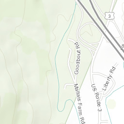
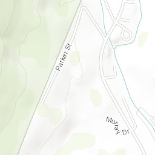
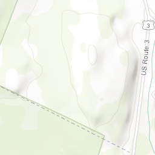
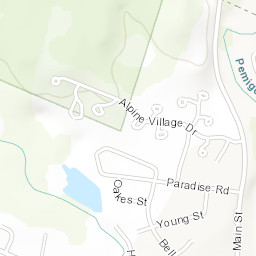
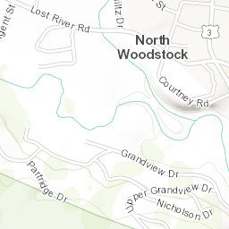
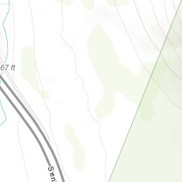
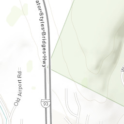
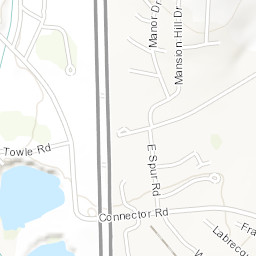
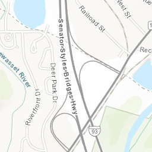
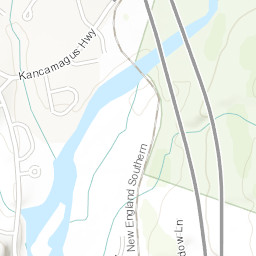
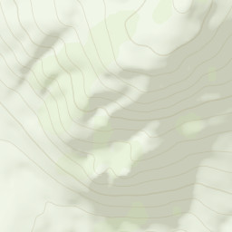
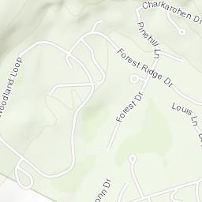
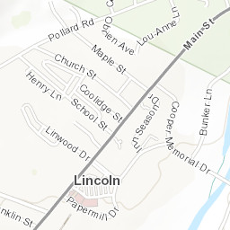
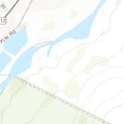
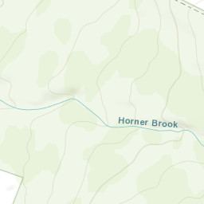
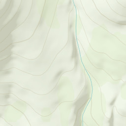
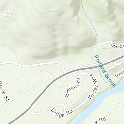
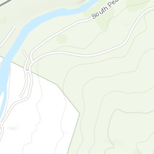
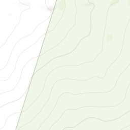
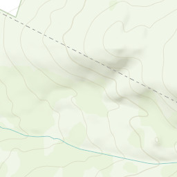
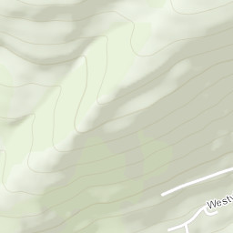
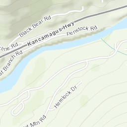
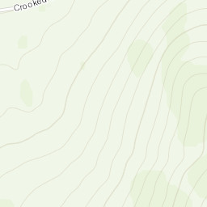
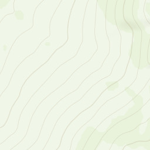
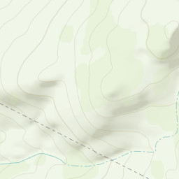
The Lodge at Lincoln Station, New Hampshire
36 Lodge Road, Lincoln. In Wednesday Aug 26 from 4 p.m., out Friday Aug 28 at 11 a.m. Lockbox self check-in, free parking on site, US$346.12 for the two nights. The lockbox is what turns a 10:30 p.m. arrival into a non-event.
What it actually is: a condominium resort on the Pemigewasset River at the eastern end of Lincoln village, where Lodge Road leaves the Kancamagus. There is an indoor pool, a hot tub and a sauna in the building — which reads as a detail until you come off Franconia Ridge at five in the afternoon with nine hours in your legs. You are on the town side of the river, not up at the ski area.
- Groceries
- Price Chopper, 10 Paper Mill Drive — 6 a.m. to 11 p.m., seven days. 1.6 km: nineteen minutes on foot, three in the car. It is the last full supermarket before the Notch, so Thursday's trail food gets bought here on Wednesday night — and the 6 a.m. opening is your backstop if you forget something. Honey's Convenience Store is up on Main Street rather than at the door — about 1.4 km, so no closer than Price Chopper itself, and its listing has gone stale enough to be worth checking before you count on it. For milk or ice at short notice, see what is open around Lincoln Station first.
- Dinner on foot
- Two minutes gets you Black Mtn. Burger Co. and Pub 32, with Gordi's Fish & Steak and CJ's Penalty Box in the same cluster. Nine minutes, across the river, gets you the Common Man at 10 Pollard Road. Sixteen on foot or three by car gets you Gypsy Café on Main Street, the most interesting kitchen of the lot.
- Not walkable
- The Woodstock Inn Station & Brewery is not walkable from this address. It is 3.5 km away in North Woodstock — 42 minutes, some of it on Route 3 with no footpath. It is a four-minute drive and still worth doing; just settle who is driving, or eat at Pub 32 instead and walk home.
- Getting around
- There is nothing to get around on. No bus, no summer shuttle, no taxi worth waiting for. Everything not on this map is the car.
- The drive that matters
- Lafayette Place is 9 miles / 15 km and 16–20 minutes. Aim for the northbound hiker lot: it is the bigger of the two and it is the side you arrive on, so there is no doubling back. The small southbound lot at Lafayette Place Campground means carrying on to the next exit, turning round, and walking a tunnel under the parkway. Flume Gorge is 10 minutes away, Artist's Bluff — Friday's sunrise — is 22.
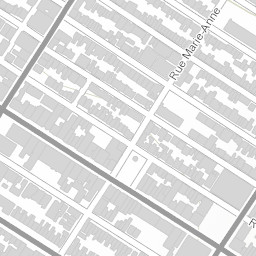
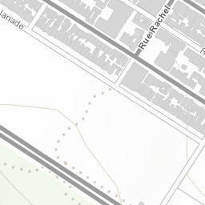
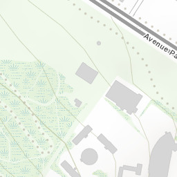
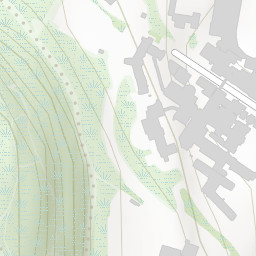
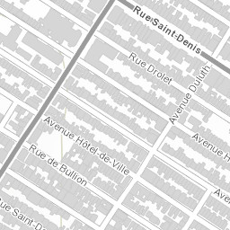
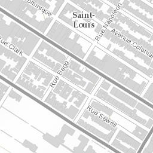
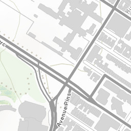
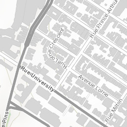
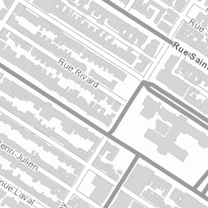
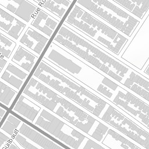
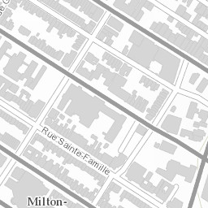
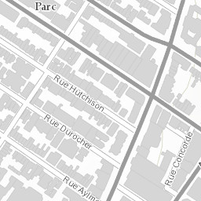
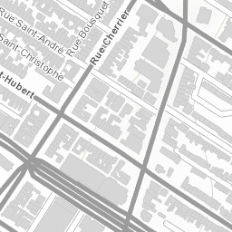
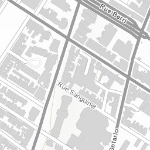
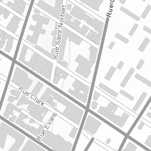
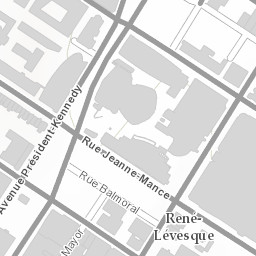
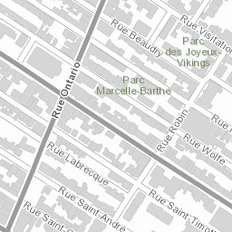
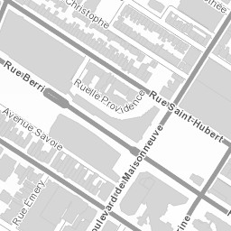
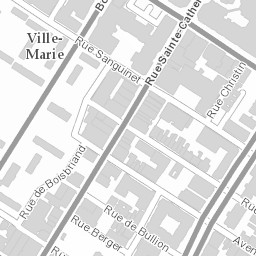
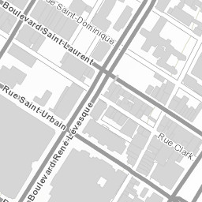
3613 boulevard Saint-Laurent — the lower Main
3613 bd Saint-Laurent, at rue Prince-Arthur. In Friday Aug 28 from 3 p.m., out Monday Aug 31 at 11 a.m. Smart-lock entry, free parking, US$514.16 for three nights.
Where that actually is: the bottom of the Main, on the seam where the Plateau runs into the Quartier Latin. Not Mile End. The two 24-hour bagel bakeries are 34 minutes north on foot, and the Quartier des Spectacles is ten minutes south — which is where three free nights of MUTEK are.
- Groceries
- The full shop is Metro, 3575 avenue du Parc — 8 a.m. to 10 p.m. daily, six minutes on foot. The good shop is La Vieille Europe, 3855 bd Saint-Laurent, four minutes north: cheese, charcuterie and coffee roasted on the premises, and the reason you will not need to buy lunch. Segal's at 4001, seven minutes, is the cheap one and has been on the Main for ninety years. Marché Brito, 67 rue Prince-Arthur E, is the corner shop at 113 m; Dépenneur Ultra on av du Parc is open 24 hours.
- Métro and buses
- Sherbrooke (orange) is 8 minutes, Saint-Laurent (green) 9, Place-des-Arts (green) 11 — two lines on foot, which is the whole island. The 55 bus stops at Saint-Laurent / Prince-Arthur, at the door, and runs the length of the Main. There are five BIXI docks inside 300 m, the nearest at Clark / Prince-Arthur, 105 m away.
- Walks, measured
- Esplanade Tranquille and MUTEK 10 min · Sushi Momo 8 · Schwartz's 4 · Tam-Tams on Mount Royal 15 · La Banquise 21 · Notre-Dame Basilica 22 · Kondiaronk Belvédère 25 · St-Viateur Bagel 34. Marché Jean-Talon is not a walk at 52 minutes — take the orange line from Sherbrooke, about 25 minutes door to door.
- Parking
- You have a spot, which is worth roughly C$25 a night in the Plateau and removes the worst thing about staying here. Park it on Friday and do not touch it until Monday: everything above is on foot or the métro, and Plateau street parking is permit-zoned and alternate-side.
- The catch
- This is the bar strip. There is a nightclub at 3614, directly across the road, and the lower Main is where Montréal goes out on Friday and Saturday. You are there for both. Take earplugs — that is the entire mitigation, and it works.
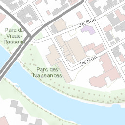
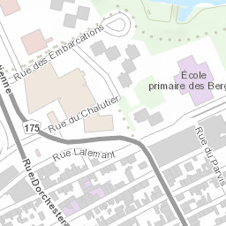
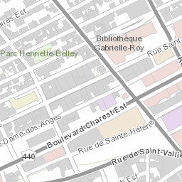
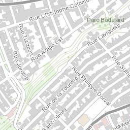
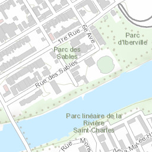
735 boulevard Charest Est — Saint-Roch, below the cliff
735 bd Charest Est, the Caïman building. In Monday Aug 31 from 4 p.m., out Friday Sep 4 at 11 a.m. Parking at 450 rue du Parvis, four minutes' walk; access details arrive 24 hours ahead. US$788.52 for four nights.
This is Saint-Roch, not the Faubourg Saint-Jean-Baptiste. The whole trade is the sixty vertical metres between you and the walled city. You gain the best eating street in Québec at the end of the block and a flat supermarket open until ten; you pay a climb, every single time.
- Groceries
- Metro Plus, 860 bd Charest Est — three minutes, 8 a.m. to 10 p.m. daily, and on the flat. La Boîte à Pain, 432 rue du Parvis, is the bakery: five minutes, open from 7 a.m., and where the next day's packed lunch comes from the evening before. Le Grand Marché — the shop that is also a sight — is 3 km, so eight minutes in the car rather than the 38-minute walk it looks like on a map.
- The lift
- The Ascenseur du Faubourg, 417 rue de Saint-Vallier Est, is a free public elevator up the cliff. Six minutes from the door, takes bicycles and wheelchairs, and it is the most useful fact on this page. Roughly 7 a.m. to 7 p.m., later on Thursday to Saturday — the cabin was replaced in 2025, so read the posted hours on the day. Lift up, stairs down.
- Walks, measured
- Flat-map minutes: Bureau de Poste 8 · Gare du Palais 9 · Porte Saint-Louis 13 · Plains of Abraham 15 · Musée de la civilisation 18 · Château Frontenac and Place Royale 19 · Lévis ferry 21. Add five minutes and a real climb for anything inside the walls, or use the lift. Which is why the Lower Town, Petit-Champlain and the ferry are the easy days, and the walled city is done in one push.
- Transport
- There is no métro; Québec City has buses and nothing else. The RTC changed its network on 22 August 2026, nine days before you arrive, so ignore any route map printed before then: Métrobus 800 and 801 now stop short at the Grand Théâtre and a new 805 runs from Parc Victoria in Saint-Roch up to Grande Allée. Between the lift, the ferry and your own feet you may never need one.
- Two honest notes
- Lauberivière, the city's largest homeless shelter, is 371 m away, and the Charest corridor has had well-documented problems with visible drug use since it moved there; the police run daily foot patrols in response. It is not a dangerous street and it is not a secret — it is the part of Saint-Roch that tourism pages leave out, and it is better to know than to be surprised by. Separately, the tramway works are live. Preparatory construction has been intensifying across the quarter since April; the big changes — rue de la Couronne closing, rue Dorchester going two-way, rue Saint-Joseph reversing direction, 47 parking spaces off Charest — all land in the autumn, just after you leave. Expect worksites and lane closures, not gridlock.
352 rang Saint-Placide Sud — a farmhouse, 14 km up the valley
352 rang de Saint-Placide Sud, Baie-Saint-Paul. In Friday Sep 4 from 4 p.m., out Sunday Sep 6 at 11 a.m. Lockbox, free parking, US$376.98 for two nights.
This is the farmhouse option. The town is 14.2 km away, twelve to fifteen minutes down the valley — the green line on the map beside this — so you will not be walking to dinner. That costs you very little here: Baie-Saint-Paul is one evening's walk, and the two days that matter in Charlevoix — the whales and the gorge — both begin with getting in the car whatever you do. What you get instead is fields, a river valley and total silence at the end of the day, which is not a bad thing to be handed after eight days of cities.
- Everything is a drive
- IGA, 1020 bd Monseigneur-De Laval — 7 a.m. to 8 p.m. daily, 13 km, 11 minutes. Le Saint-Pub and the galleries on rue Saint-Jean-Baptiste, 14 km, twelve to fifteen minutes. Laiterie Charlevoix for Le 1608, about 17 km. On the rang itself there is no shop, no restaurant, no footpath and no streetlight.
- Shop on the way in
- You arrive on Friday afternoon straight from the whales. Stop in town before you drive up and do it all in one halt: IGA, the bakery on rue Saint-Jean-Baptiste, and Saturday's Hautes-Gorges picnic from the Route des Saveurs producers. Coming back down for a forgotten thing costs half an hour.
- Who is driving
- Both dinners are in town and both end with 14 km of unlit rural road back up the rang, so settle it before the wine list arrives, both nights.
- Saturday morning
- Hautes-Gorges is 80 km and 1 h 15 from this door — not the 65 km measured from the town centre. The rang adds roughly fifteen kilometres each way, so leave earlier than feels necessary, or take the riverboat and keep the morning.
- Transport
- None whatsoever.
Eating, two ways — one vegetarian, one omnivore, no compromisesThe canon, the cheap list, two splurges · every meal of every day planned›
Montréal is one of the most vegetarian-friendly cities in North America. Québec City is not — it is a terroir city built on game, pork and fish — but it has more than enough, and it hides its best options outside the walls, which is where you're staying anyway. Below, everything is tagged.
FULLY VEG entirely vegetarian or vegan BOTH excellent for K and serious food for A A ONLY worth it, but K will want to be elsewhere
The old list came to C$1,180 across six bookings covering seven dinners. This one comes to about C$680 for the same seven nights, buys more local food, and still keeps a Michelin star.
The canon — the fifteen things you can only eat here
Not a restaurant list. These are the dishes and products that exist because of this place — a breed of cow brought from France in the 1600s, a Depression-era pudding, a bagel boiled in honey because the water was wrong for New York's method. Each one has a named best address and a price. Work through this list and you will have eaten Québec, for about the cost of two of the dinners that used to be on this page.
FULLY VEG 1 · The Montréal bagel
St-Viateur, 263 rue Saint-Viateur O · Fairmount, 74 av Fairmount O · both 24 h · ≈C$2 eachSmaller, denser and sweeter than New York's, hand-rolled, boiled in honey water and baked in a wood-fired oven that has never gone out. Buy one hot sesame from each shop, four minutes apart, and settle the argument yourselves. Do it at midnight — that is when the ovens are best and the queue is Montrealers.
A ONLY 2 · Smoked meat
Schwartz's, 3895 bd Saint-Laurent · ≈C$13–16 · 3 blocks from your doorBeef brisket dry-cured with spice for ten days, smoked, then steamed. Schwartz's has done it since 1928 and there is genuinely nothing on the menu for a vegetarian. Take it away while K is at Fairmount — the takeout counter next door sells the same meat and its line moves far faster than the dining room's. If both are heaving, Lester's Deli, 1057 av Bernard O in Outremont, is the other institution for it: twenty minutes away, and closed Sundays.
BOTH 3 · Poutine, with a gravy K can eat
La Banquise, 994 rue Rachel E, open 24 h · ≈C$14–17 · Patati Patata, 4177 bd Saint-Laurent · under C$10Thirty-odd poutines and — the rare and crucial part — a vegetarian gravy, so you both eat the national dish at the same table. Order La Végé or La Matty. Patati Patata does the small, cheap, greasy-spoon version two minutes from the apartment.
A ONLY 4 · The Wilensky Special
Wilensky's Light Lunch, 34 av Fairmount O · under C$6 · since 1932Beef bologna and salami on a pressed roll. Always with mustard. Never cut in half. Those are the rules and they are not negotiable, which is the entire point. Four minutes from Fairmount Bagel — do both in one walk.
FULLY VEG 5 · Fromage en grains — the squeak
Marché Jean-Talon · Le Grand Marché de Québec · Laiterie Charlevoix · ≈C$7–9 a bagCheddar curds eaten the day they are made, when they still squeak against your teeth. Refrigeration kills the squeak, which is why this barely exists outside Québec. Buy a bag at a market, eat it standing up, and you will understand what poutine is actually about.
A ONLY 6 · Tourtière, ragoût de boulettes, cipaille
Buffet de l'Antiquaire, 95 rue Saint-Paul, Québec City · ≈C$15–22Spiced pork pie, meatball stew in gravy, and a layered game-and-pastry pie that takes six hours. A 1970s diner serving a room of regulars, not tourists — the real traditional cooking, and almost nothing for a vegetarian. Go for breakfast, when it is at its best and its busiest.
FULLY VEG 7 · Pouding chômeur & tarte au sucre
La Binerie Mont-Royal, 367 av Mont-Royal E · Grand Marché bakeries · ≈C$6–9« Unemployed man's pudding » — cake batter drowned in hot maple syrup and cream, invented in the Depression because syrup was cheaper than sugar. Sugar pie is its Christmas cousin. Both are absurd and both are the point.
BOTH 8 · Casse-croûte poutine, the Québec City way
Chez Ashton, 54 côte du Palais · ≈C$10 · Snack Bar St-Jean, rue Saint-Jean · C$7–23Ashton is the chain Quebecers are actually loyal to — since 1972, and the poutine locals compare everything else against. Its classic gravy is beef-based: for K, go to Chez Victor on rue Saint-Jean, which runs three gravies including a vegan one and several serious veggie builds.
FULLY VEG 9 · Queues de castor
rue du Petit-Champlain, Lower Town · ≈C$8 · Day 6, after the ferry« Beaver tails » — whole-wheat dough stretched by hand into a paddle, deep-fried, and covered in maple butter or cinnamon sugar. Invented in Ontario, perfected as a Québec winter-street institution. Eat it walking down the oldest commercial street in North America.
FULLY VEG 10 · Le 1608, and the cow it comes from
Laiterie Charlevoix, 1167 bd Monseigneur-De Laval, Baie-Saint-Paul · ≈C$8–12 a wedge · free museumA washed-rind cheese made from the milk of the Canadienne — the only dairy breed ever developed in North America, brought from France in the 1600s and down to a few hundred animals. A working dairy with a small museum attached. This is the single most place-specific thing you will eat all trip.
FULLY VEG 11 · Bleu Bénédictin
Abbaye de Saint-Benoît-du-Lac · ≈C$12–18 · on Day 2's route, no detourBlue cheese made by Benedictine monks on a lake that straddles the border, sold in their own shop after you have heard them sing the office in Gregorian chant. Buy it, plus their cider, and eat it on the abbey lawn — that is Day 2's lunch.
FULLY VEG 12 · Cidre de glace & crème de cassis
Cassis Monna & Filles, 721 ch Royal, Saint-Pétronille, Île d'Orléans · tasting ≈C$5–10Ice cider is a Québec invention — apples left to freeze on the tree, pressed at −10 °C, the sugar concentrated by ice rather than heat. Monna is three generations of blackcurrant growers on the island, with a terrace looking straight back at the city. Day 7 passes the door.
BOTH 13 · Sagamité
Restaurant Sagamité, Wendake · soup ≈C$9–16 · Day 8, before LuminaCorn, beans and squash — the three sisters — simmered into the soup the Wendat have eaten for centuries and named the restaurant after. Bannock alongside. Ask whether the broth is game-based; they will make it work. The affordable way to eat Indigenous cuisine on this trip.
A ONLY 14 · Portuguese piri-piri chicken
Ma Poule Mouillée, 969 rue Rachel E · ≈C$15 · 10 min from your doorMontréal's Portuguese community turned charcoal rotisserie chicken into a second civic dish, and Ma Poule Mouillée put it on top of a poutine. It is as good as that sounds. Directly across Parc La Fontaine from La Banquise, so this and #3 are one walk.
BOTH 15 · The boreal larder
Le Grand Marché de Québec, 250 bd Wilfrid-Hamel · free to browse · Légende to eat it cookedFir tips, sumac, sea buckthorn, Labrador tea, wild mushrooms, sea parsley — the ingredients that grow north of the St. Lawrence and nowhere you shop at home. Browse the market stalls for free, buy a jar to take back, and see what a Michelin kitchen does with them at Légende on Day 6.
Montréal
FULLY VEG Falafel Yoni
Plateau · pita C$8 · plate C$11 · walk-inEight dollars, made in front of you, and better than most sit-down falafel in North America. The obvious lunch on any Plateau day and the fallback on any night nobody wants to decide.
FULLY VEG Drogheria Fine
68 av Fairmount O, Mile End · C$6 · takeout window onlyOne thing, out of a window, since 2012: gnocchi in salsa della nonna, six dollars, eaten on the kerb. A Mile End ritual. Do it on the bagel walk — it is two doors from Fairmount.
BOTH Café Santropol
3990 rue Saint-Urbain · C$14–18 · garden out backA 1976 Plateau institution built on absurdly tall vegetarian sandwiches and soup, with one of the best hidden gardens in the city behind it. Cold-brew coffee, no rush, and a table under the trees after a morning on foot.
BOTH Queen Sheba
Mile End · veg platter ≈C$20 for two to share · injeraEthiopian, and the smartest possible answer to the vegetarian/omnivore split: one enormous platter, a dozen separate stews, half of them vegan, everything eaten with your hands off the same injera. You order once and you both eat everything.
FULLY VEG Aux Vivres
bd Saint-Laurent · C$18–24 · 12 min walkThe city's original vegan restaurant, running since 1997. Bowls, the famous BLT with coconut bacon, house dragon sauce. Casual, always busy, an institution in its own right — and the closest good vegan dinner to your door.
FULLY VEG Umami Ramen & Izakaya
Mile-Ex · ramen C$17–21 · izakaya plates from C$6Montréal's first fully vegan ramen shop — noodles made in house from organic wheat, broths brewed for hours, proper izakaya plates alongside. Twenty minutes from Jean-Talon and the right dinner after a market afternoon.
BOTH Trip de Bouffe
av Mont-Royal E, Plateau · under C$10Lebanese manouche — flatbread baked to order under za'atar, cheese or spiced meat — plus falafel and shawarma from the same counter. Under ten dollars, five minutes off Saint-Laurent, and open late.
BOTH Marché Jean-Talon, as lunch
7070 av Henri-Julien · C$25–30 feeds both of you · Day 4North America's largest open-air market, 150 vendors, running since 1933. Do not treat this as sightseeing — treat it as lunch. A baguette, a wedge from a fromagerie, curds, tomatoes, a peach, and a cider. Better than any restaurant meal you would buy for the same money.
BOTH Le Vin Papillon — optional, and pricier
Little Burgundy · small plates C$14–24 · no reservations · ≈C$45–60 a head with wineThe Joe Beef family's wine bar, internationally known for cooking vegetables better than almost anyone in Canada. It is genuinely excellent and it is genuinely not a C$25 dinner. It is no longer booked. If you want one wine-bar night in Montréal, walk in at 3 p.m. when the doors open, share four plates and skip the bottle.
Québec City
BOTH Bureau de Poste
rue Saint-Joseph E, Saint-Roch · everything on the food menu under C$10The Saint-Roch local's answer, and the single best-value room in the city: the whole kitchen menu is under ten dollars and nothing on the drinks list is over thirteen. Loud, young, unpretentious, and a flat ten-minute walk from your door — no hill.
BOTH Chez Victor
rue Saint-Jean · C$18–24 · 2 min from the apartmentA Québec City institution for burgers with several serious vegetarian and vegan builds rather than a token patty, plus three poutine gravies including a vegan one. Always full of locals. This is your default when the day has run long.
BOTH Le Billig
rue Saint-Jean · galettes C$14–20 · cider by the bowlBuckwheat galettes — a Breton tradition that came over with the settlers — with plenty of vegetarian fillings, dessert crêpes, and Norman-style cider drunk from a bowl. The best cheap lunch on your street, and the right stop mid-way through the Old Québec day.
BOTH La Boîte à Pain
rue Saint-Joseph E, Saint-Roch · sandwich or slice under C$14A proper bakery that also does pizza, calzone and sandwiches on its own bread. This is the breakfast-and-packed-lunch shop for the Québec City base — buy the next day's hiking lunch here the evening before.
BOTH Nina Pizza Napolitaine & Attaboy
both on rue Saint-Jean · C$16–22 whole · Attaboy sells by the sliceNeapolitan, wood-fired, and Nina runs two fully vegan pizzas as standard rather than as a favour. Attaboy is the neighbourhood slice shop two minutes further along. Between them, no evening in Québec City has to be a decision.
BOTH Le Grand Marché de Québec
250 bd Wilfrid-Hamel, ExpoCité · C$25–30 feeds both · 33 permanent stallsThe city's real market since 2019 — producers, a fromagerie, boreal-ingredient stalls, bakers, and cafés inside the hall. This replaces J.A. Moisan, the 1871 grocery on rue Saint-Jean that this guide used to send you to: it closed for good in January 2025. Do not walk up the hill looking for it.
FULLY VEG Le Don Végane
Saint-Roch · C$25–38 · reserveThe city's best-known fully vegan kitchen, and the one night in Québec City where K orders from the whole menu without a single question. Comfort-leaning and generous rather than refined. City tourism tells people to book because it fills.
FULLY VEG Bistro Hortus — go at lunch
rue Saint-Jean, inside the walls · dinner C$45–70 · lunch far lessVegetarian and largely vegan, using produce grown on the restaurant's own rooftop — properly cooked, seasonal, and ten minutes from your door. At dinner it is a C$50-a-head restaurant. Go at lunch instead and you get the same kitchen for half of it.
A ONLY Buffet de l'Antiquaire & Chez Ashton
95 rue Saint-Paul / 54 côte du Palais · C$10–22The two addresses in the canon list above, restated because they are also just cheap: the 1970s Québécois diner where the tourtière and the cipaille are real, and the poutine chain Quebecers are actually loyal to. Almost nothing at the Buffet for a vegetarian — pair it with Chez Victor.
Charlevoix & the road
BOTH Le Saint-Pub · Microbrasserie Charlevoix
2 rue Racine, Baie-Saint-Paul · C$18–28 · no booking needed · 4.2★ over 5,000 reviewsYour default dinner both Charlevoix nights. The region's brewery with its own kitchen — beer brewed on the premises, poutine, fish and chips, a proper gluten-free menu and vegetarian mains that are not an afterthought. Walk-in, in town, on a holiday weekend when everything else needs a reservation.
FULLY VEG The Route des Saveurs picnic
free to drive, pay at source · ≈C$30 buys two lunchesQuébec's original flavour trail, 80-odd producers between Petite-Rivière-Saint-François and La Malbaie. Laiterie Charlevoix for Le 1608 and a free museum · Maison Maurice Dufour for Le Migneron · Vergers Pedneault for cider and dried fruit · Les Bonyeuses, formerly À Chacun Son Pain, at 1006 bd Monseigneur-De Laval for the loaf. Buy it Friday evening; it is Saturday's Hautes-Gorges lunch and it is better than any restaurant in the valley.
BOTH Baie-Saint-Paul, if you want one nicer night
rue Saint-Jean-Baptiste · C$40–60 a head · book ahead — Labour Day weekendLes Faux Bergers — wood-fired, farm-driven, always something serious for a vegetarian. Le Mouton Noir — a terrace over the river, the town's classic. Neither is booked and neither needs to be. If Saturday feels like the night for it, book one on arrival Friday; otherwise Le Saint-Pub twice is no hardship and saves about C$120.
BOTH New Hampshire, nights 1–2
Lincoln / North Woodstock · US$18–28Pub 32 and Black Mtn. Burger Co. are two minutes from the apartment door and are the honest answer on ridge night. Woodstock Inn Station & Brewery is the better room — own beer, vegetarian mains that aren't an afterthought — but it is a four-minute drive, not a walk: 3.5 km. Gypsy Café in Lincoln is the most interesting kitchen of the three. Price Chopper, 10 Paper Mill Drive (6 a.m.–11 p.m., seven days) is where Thursday's hiking food comes from.
The two splurges
BOTH Légende par La Tanière · Tuesday Sep 1
255 rue Saint-Paul, Lower Town · tasting menu ≈C$150 a head · book now, weeks aheadOne Michelin star in Québec's inaugural 2025 guide, and the reason it earns the money is a rule rather than a chef: Légende is strictly locavore — no chocolate, no pepper, no citrus, no vanilla, nothing that does not grow or live here. What is left is the boreal larder — fir, sumac, sea buckthorn, wild mushrooms, lake fish, game — cooked at a level you cannot get anywhere else on earth, because nowhere else has these ingredients and this kitchen.
They will build a full vegetarian tasting menu. Say so when you reserve, not on the night. Sister restaurant to the two-star Tanière³, at a third of the price. It is a ten-minute walk from the Lévis ferry landing, which is exactly where Day 6 ends.
FULLY VEG Sushi Momo · Friday Aug 28
rue Saint-Denis, Plateau · ≈C$65 a head all in · reserve nowVegan sushi that critics write about without the qualifier — oyster mushroom, smoked tofu, fermented everything, plating that belongs in a much more expensive room. It is the one dinner of the trip where K is not the accommodated party: the entire menu is hers, and A eats things he has no way of ordering at home.
Groceries, markets and the packing days
Where you actually shop
Lincoln, NH — Price Chopper, 10 Paper Mill Drive, open to 11 p.m. Arrive Wednesday night and shop Thursday's hiking food before bed.
Montréal, the lower Main — Metro, 3575 av du Parc is the full shop, six minutes and open to 10 p.m.; La Vieille Europe at 3855 is four minutes and the better food; Segal's at 4001 is the cheap one, seven minutes, ninety years on the Main.
Québec City, Saint-Roch — Metro Plus, 860 bd Charest Est, 8 a.m.–10 p.m., which is three minutes from your door. Le Grand Marché for the good stuff.
Baie-Saint-Paul — the IGA in town, plus the Route des Saveurs producers.
Three days you must pack a lunch
Day 1 · Franconia Ridge. Nine miles, 3,900 ft, no water and no food on the ridge. Two sandwiches each, bars, salty snacks, 3 L of water each, electrolyte tablets. Buy it Wednesday night at Price Chopper.
Day 9 · the whale boat. 6:15 a.m. departure, three hours on the water, nothing decent to buy at Baie-Sainte-Catherine. Pack breakfast and lunch the night before; fill a thermos.
Day 10 · Hautes-Gorges. No shop inside the park and the drive in is 1 h 15. This is the Route des Saveurs picnic — buy it Friday evening on the way into Baie-Saint-Paul.
Day 11 · the drive home is not a hike, but it is 10 h 53 of driving. Pack it or you will eat at a service plaza.
Crossing the border with food
Northbound and southbound, leave the fresh produce behind. No fresh fruit or vegetables, no plants, no firewood, in either direction. Cheese, bread, baked goods, sealed dry goods and cooked food are fine.
That matters twice: clear the Montréal fridge before Day 5, and eat or bin the fresh things before Sunday's crossing. The cheese you bought in Charlevoix comes home with you; the tomatoes do not.
Alcohol allowance: 1.5 L of wine or 8.5 L of beer per adult back into the US, duty-free, after 48 hours away. A case of Microbrasserie Charlevoix is within it.
Guides and audio walks — someone in your ear on every day that has no guideTwo guided walks · five audio walks, two of them free · what to download first›
Two mornings of this trip put a guide in front of you, and a few later stops come with one attached — the prison in Trois-Rivières, the museum at Wendake, the naturalist on the whale boat, the warden on the riverboat. Everything else you walk on your own, and that is the gap this section closes. Every stop in the day-by-day that has no guide now carries its own audio link — they are repeated here, and all of them are aggregated onto three rows of the sheet so you can download them in one sitting.
★ The two walks with a person
Do them on your first full day in each city. Two hours with someone who lives there front-loads the context that makes everything afterwards legible — which is worth far more on Day 3 than on Day 5.
Montréal, Saturday Aug 29 — either a Greeter (a local volunteer, free, no tips accepted, 2–4 hours, groups capped at six, and you can request a theme) or the tip-based Old Montréal walk from Place Jacques-Cartier. Not both. The Greeter is the better version and needs 2–4 weeks' notice; the walking tour is the fallback if the request does not come through. Both are rows on the sheet.
Québec City, Tuesday Sep 1 — pay-what-you-wish, around 10 a.m., upper and lower town in 90 min–2 h. Book at least 48 hours ahead: group sizes in Petit-Champlain are capped to manage crowding and cruise-ship days fill. There is no Greeter programme in Québec City.
Free with the Canada Strong Pass: Parks Canada runs guided programmes at the Fortifications and Saint-Louis Forts & Châteaux — free through Sep 7, 2026. Check the timetable on arrival; if one lands on your Day 6, take it over the audio walk.
Québec City — three audio walks, three different days
VoiceMap is the app: GPS-triggered narration that plays as you reach each point, phone stays in your pocket, works fully offline. Roughly C$8–12 a tour, and you can pause for a museum and resume.
Day 6, on the walls — The Fortifications: A Unique Heritage Site in North America, about an hour, gate by gate.
Day 6, after 4:30 p.m. — Place Royale & Petit-Champlain, 906 m and an hour, from the Filles du Roy to Félix Leclerc.
Day 6, on Dufferin Terrace — The Heart of Old Québec City: the terrace, the cathedral, the Séminaire and the Ursulines, 60–90 min.
Six walks exist in total; the other three are food, ghosts and French colonial heritage. Two is plenty for four days.
Montréal — and one that is free
Cité Mémoire is the one to do first, and it costs nothing. Twenty-odd projection tableaux on the walls, lanes and trees of Old Montréal, with the soundtrack and the historical context on a free app in four languages. It runs Wednesday to Sunday from nightfall — all three of your Montréal nights qualify — and it pairs with the Old Port walk on Day 3 rather than competing with it.
Day 4, the bagel walk — Mile End meets Outremont on VoiceMap starts at the Rialto and goes past St-Viateur, which is exactly the hour this guide already asks you to spend there.
Eight VoiceMap tours cover the city. The one worth knowing about beyond the two above is Mansions and Museums, the Golden Square Mile — not in the plan, but the obvious fallback if a Montréal afternoon washes out.
Worth paying for, once: Les Promenades Fantômes — Québec City's lantern-lit evening ghost walk, with a person, in costume. Serious travellers rate it not for the ghosts but for the 17th-century social history smuggled inside. It is a game-time call rather than a booking, and it is in that table.
Before you go
What to wear on a summit and on a boat, what will catch you out on a Québec road, and a few hours of watching and reading that change what you notice once you are there.
Two mountain days, nine city days, one boat.
Late August into early September in Québec is the best weather of the year and also the most variable. Pack for 26 °C on a Montréal terrace and 4 °C with wind on a summit — in the same suitcase.
| Where | Typical day | Typical night | The catch |
|---|---|---|---|
| Franconia summits | 4–13 °C / 40–55 °F | — | Routinely 20 °F colder than the trailhead with 30–50 km/h wind on a "nice" day. This is the number that hurts people. |
| Montréal | 22–26 °C / 72–79 °F | 13–16 °C / 55–61 °F | Humid. Afternoon thunderstorms are common. |
| Québec City | 19–23 °C / 66–73 °F | 10–13 °C / 50–55 °F | Wind off the river on Dufferin Terrace and the ferry. Evenings need a layer. |
| Charlevoix & the gorge | 16–21 °C / 61–70 °F | 7–11 °C / 45–52 °F | Noticeably cooler and wetter than Québec City. |
| The whale boat | Feels like 5–10 °C | — | Open water, wind, spray, three hours. Dress as if it were November. |
Hiking kit — Franconia & the Acropole
Non-negotiable: broken-in hiking boots or trail runners with real tread (the Falling Waters slabs are wet rock) · windproof shell · rain jacket · fleece or light insulated layer · no cotton anywhere — wool or synthetic base layers, socks included · hat and light gloves (yes, in August) · 3 L water each · lunch plus 2× the snacks you think you need · headlamp with fresh batteries · small first-aid kit with blister care · sunscreen and sunglasses (fully exposed for 1.7 miles).
Strongly recommended: trekking poles — they change the descent completely · a paper map or a fully downloaded offline map (Gaia, AllTrails, or the AMC White Mountain Guide) · battery pack · a whistle.
City kit
Shoes are the whole game. Québec City is cobbles, stairs and a real hill; Montréal is 6–8 miles a day on pavement. Bring shoes you have already walked twenty miles in — this is not the week for new ones. A second pair so one can dry.
Layers: a light rain shell you'll carry daily, one warm layer for evenings, and one outfit each that works for a nice dinner (Légende above all, and a drink at the Château Frontenac's 1608 bar). Québec is not formal, but it is well dressed.
Small stuff: daypack · reusable water bottles · umbrella · a tote for markets · swimwear and flip-flops if you do a Nordic spa.
Documents, money, phone
Border: valid passports (or passport cards for a land crossing) · vehicle registration · proof of auto insurance · your rental agreement if applicable. Know what you're carrying: no fresh produce, plants or firewood across in either direction, and declare anything you're unsure about.
Money: a credit card with no foreign-transaction fee — this alone saves ~3% of the whole trip. Carry C$100–150 cash for parking meters, tips and the odd farm stand. Tipping in Québec is 15–20% like home.
Phone: confirm your carrier's Canada plan before you cross, or buy a local eSIM. Download offline Google Maps for Québec province and New Hampshire, plus every VoiceMap tour, before you leave wifi.
The things that will actually catch you out.
Rules that differ from home
Right turn on red is illegal on the entire island of Montréal — and only there. Elsewhere in Québec it's permitted unless signed. Everything is metric: 100 km/h on autoroutes, 50 km/h in towns. Radar enforcement is real and tickets follow you home. Winter-tyre law doesn't apply in September. Headlights on in rain. Hands-free only, strictly enforced.
Signage is French only
Québec does not post bilingual road signs. Learn six words before you go: Arrêt (stop) · Sortie (exit) · Ouest / Est / Nord / Sud · Voie réservée (reserved lane) · Stationnement interdit (no parking) · Sauf (except — the critical word on parking signs). Parking signs are stacked and conditional; read all of them, then read them again.
Parking, the honest version
Book lodging with a parking spot in Montréal and Québec City and leave the car there. Montréal's Plateau is permit-zoned with alternate-side cleaning; Old Québec's streets are a tow-truck economy. Use the P$ Service mobile app in Montréal and Copilote in Québec City for metered parking. Budget C$15–25 a night if parking isn't included.
Border, both directions
Northbound: Derby Line VT → Stanstead QC on I-91/A-55. Southbound on Sep 6 you'll likely use Lacolle → Champlain NY on A-15/I-87. Check both Canadian and US wait times before committing — Labour Day Sunday afternoon is the worst window of the year, and a 20-minute detour to a quieter crossing can save you two hours.
Live checks, every driving morning
Fuel & distance
Fuel is sold by the litre and is meaningfully more expensive in Québec than in New England — fill up in Vermont before crossing north, and in New York or Vermont on the way home. Fill again in Québec City before Charlevoix and in La Malbaie before the whale run; stations thin out fast past Baie-Saint-Paul. Total driving is roughly 2,400 km.
Watch, read and listen your way in.
Québec has a film industry and a songbook that most Americans have never touched, and an evening of homework transforms what you notice on the ground. Cut to what earns its time: three films, one ten-minute short, and a listening order. Ranked.
Watch, in this order — and only these
1 · Nouvelle-France (2004, Jean Beaudin) — released in English as Battle of the Brave. A CA$30-million conquest-era epic shot in Québec City, with Gérard Depardieu, Tim Roth and Jason Isaacs. It is flawed and it was mauled on release, but it is the only mainstream film about 1759, and it will put costumes and cannon smoke on the Plains of Abraham before you stand on them on Day 6.
2 · Bon Cop, Bad Cop (2006, Érik Canuel) — a buddy-cop comedy built entirely on the French/English divide, opening with a body hung across the Ontario–Québec border sign. One of the highest-grossing Canadian films ever made domestically. The least worthy film on this list and easily the most instructive about the thing you will feel all week.
3 · I Confess (1953, Alfred Hitchcock) — Montgomery Clift as a priest who hears a murderer's confession and cannot speak. Shot on location in Québec City and premiered there in February 1953. You will walk past several of the shots on Day 6 without being told.
Ten minutes that explain the country
The Sweater (Le chandail, 1980, Sheldon Cohen) — the National Film Board's animated version of Roch Carrier's story, narrated by Carrier himself. A boy in Sainte-Justine in 1946 orders a Maurice Richard Canadiens sweater from the Eaton's catalogue and is sent a Toronto Maple Leafs jersey instead. His mother refuses to send it back.
It is ten minutes long, it is very funny, and it carries more about language, religion, hockey and humiliation in Québec than anything else on this page. Watch it first. A line from the story is printed on the Canadian five-dollar bill.
Listen, in this order
Félix Leclerc — whose island you drive the length of on Day 7.
Gilles Vigneault, "Mon pays" — effectively an unofficial anthem, and you will hear it.
Harmonium for the 1970s.
Les Cowboys Fringants for the modern one every Quebecer knows by heart.
Leonard Cohen and Arcade Fire for the anglophone Montréal side.
And put a MUTEK artist playlist on for the drive north — you have three free nights of it on Esplanade Tranquille.
Load the driving list
Google Maps has no way to import a saved list, so it goes in one place at a time. This does the sequencing and remembers where you stopped; you click Save. Do it once on a laptop, then share the list rather than loading it twice.
- route
- Acropole des Draveursthe hard climb
- Baie-Saint-Paulosm:way/41162401 (Rue Saint-Jean-Baptiste - the dining and gall…
- Baie-Ste-Catherineosm:node/1216423737 (whale-cruise wharf, 159 Route 138 (Croisiè…
- Cheshire, CTCheshire, Naugatuck Valley Planning Region, Connecticut, 064
- Chute Kabir Koubawaterfall and gorge
- Croisières AML — whale wharfwhere the whale cruise boards
- Derby LineDerby Line, Derby, Orleans County, Vermont, United States
- DeschambaultÉglise Saint-Joseph, 115, Rue de l'Église, Deschambault, Des
- Ekionkiestha' longhousefull-scale longhouse you can enter
- Haskell Free Libraryon the border; front door is on US soil
- Hautes-Gorgesgmaps: placed by hand on Google basemap (not in OpenStreetMap)
- IGA Baie-Saint-Paulgroceries
- La Traiteboreal tasting
- Laiterie CharlevoixLe 1608 and a free museum
- Le Draveur visitor centredecide the day here
- Le Germain Charlevoixthe station hotel
- Le Mouton Noirbooked dinner
- Le Saint-Pubyour default Charlevoix dinner
- Les Bonyeusesthe picnic loaf; was À Chacun Son Pain, and moved street
- Les Faux Bergersbooked dinner
- Lincoln, NHgmaps: the Airbnb doubles as this pin (your instruction)
- MONTRÉALgmaps: the Airbnb doubles as this pin (your instruction)
- Maison Maurice Dufourcheese and wine, Route des Saveurs
- Moulin de La Chevrotièrestone mill
- Musée POPpopular culture, by the old prison
- Musée huron-wendatand the longhouse
- Notre-Dame-de-Lorette chapel1730 mission chapel
- Onhwa' Luminanight walk, Day 8
- Pointe-Noirewhales from the shore
- QUÉBEC CITYQuébec, Agglomération de Québec, Capitale-Nationale, Québec,
- Restaurant Sagamitésagamite soup
- Rue Saint-Jean-Baptistethe dining and gallery street
- St-Benoît-du-LacAbbaye de Saint Benoît du Lac, Abbaye-de-Saint-Benoît-du-Lac
- Trois-RivièresVieille prison de Trois-Rivières, 200, Rue Laviolette, Saint
- Vieux Presbytère1815, beside the church on Cap Lauzon
- franconia
- Artist's BluffArtists Bluff, Franconia, Grafton County, New Hampshire, 035
- Cannon Mtn Tramwaymanual: way/328888941, 260 Tramway Drive - the valley station y…
- Flume Gorge Visitor CenterFlume Gorge & Visitor Center, 852, Daniel Webster Highway, L
- Greenleaf HutGreenleaf Hut, Greenleaf Trail, Franconia, Grafton County, N
- Lafayette Place trailheadLafayette Campground, 9, Franconia Notch Parkway, Franconia,
- Lincolngmaps: the Airbnb doubles as this pin (your instruction)
- Little Haystack ≈4,760 ftLittle Haystack Mountain, Franconia, Grafton County, New Ham
- Mt. Lafayette 5,249 ftMount Lafayette, Franconia, Grafton County, New Hampshire, U
- Mt. Lincoln 5,089 ftMount Lincoln, Franconia, Grafton County, New Hampshire, Uni
- Old Man of the Mountain Profile Plazathe profilers on the lakeshore
- The BasinThe Basin, East, Franconia Notch Bike Path, Lincoln, Grafton
- montreal
- Atwater MarketMarché Atwater, Avenue Greene, Le Sud-Ouest, Montréal, Agglo
- Aux Vivresvegan, 12 min walk
- Bonsecours Markethoused the Parliament in 1849
- Bota Botaspa on a boat
- Botanical GardenJardin botanique de Montréal, 4101, Rosemont–La Petite-Patri
- Café Santropolgarden out back
- Château Ramezay1705 governor’s house
- Drogheria Finetakeout window only
- Esplanade TranquilleEsplanade Tranquille, Quartier des Spectacles, Ville-Marie,
- Fairmount BagelFairmount Bagel, 74, Avenue Fairmount Ouest, Mile-End, Le Pl
- Falafel Yoniwalk-in
- Kondiaronk BelvédèreBelvédère Kondiaronk, Ville-Marie, Montréal, Agglomération d
- La Banquisepoutine, open 24 h
- La Binerie Mont-Royalpouding chômeur
- Le Vin Papillonsmall plates, no reservations
- Lester's Delismoked meat, closed Sundays
- Ma Poule MouilléePortuguese piri-piri chicken
- Marché Britocorner shop, 113 m from the door
- Marché Jean-TalonMarché Jean Talon, 7070, Avenue Henri-Julien, La Petite-Patr
- Notre-Dame Basilica + AURABasilique Notre-Dame, 110, Rue Notre-Dame Ouest, Vieux-Montr
- Notre-Dame-de-Bon-Secours Chapelthe sailors’ chapel and tower
- Patati Patatacheap poutine
- Place Jacques-Cartierthe square above the Old Port
- Pointe-à-CallièrePointe-à-Callière, 350, Place Royale, Vieux-Montréal, Ville-
- Queen Shebainjera, veg platter
- Saint Joseph's OratoryOratoire St-Joseph, 3800, Chemin Queen-Mary, Côte-des-Neiges
- Segal'scheap groceries
- St-Viateur BagelSt-Viateur Bagel, 263, Rue Saint-Viateur Ouest, Mile-End, Le
- Tam-TamsMonument à sir George-Étienne Cartier, 4056, Avenue du Parc,
- Trip de Bouffeunder C$10
- Umami Ramen & Izakayaramen and izakaya plates
- Wilensky's Light Lunchthe Wilensky Special, since 1932
- YOUR BASE — The MainTonic Salon Spa, 3613, Boulevard Saint-Laurent, Le Plateau-M
- quebec
- Artillery Parkthe 1808 model of the city
- Attaboysells by the slice
- Bistro Hortusgo at lunch
- Bois-de-Coulongenearby and almost nobody goes
- Buffet de l'Antiquairetourtiere, ragout de boulettes
- Chez Ashtoncasse-croute poutine
- Chez Victor2 min from the apartment
- Château FrontenacFairmont Le Château Frontenac, 1, Rue des Carrières, Vieux-Q
- Escalier Casse-Couthe Breakneck Steps down to Petit-Champlain
- Fortifications of Québecthe walls, Parks Canada
- Fresque des Québécoisthe trompe-l’oeil mural
- Joan of Arc Gardensunken garden
- La Boîte à Painsandwich or slice
- La CitadelleLa Citadelle de Québec, Promenade des Gouverneurs, Vieux-Qué
- Le Billiggalettes and cider by the bowl
- Le Don Véganereserve
- Le Grand Marché de Québec33 permanent stalls
- Les Promenades Fantômeslantern-lit evening walk; game-time call
- Lévis ferryGare fluviale, 10, Rue des Traversiers, Vieux-Québec, Vieux-
- Martello Tower 1on the battlefield
- Morrin CentreMorrin Centre, Chaussée des Écossais, Vieux-Québec, Vieux-Qu
- Musée de la civilisationMusée de la Civilisation de Québec, 85, Rue Dalhousie, Vieux
- Nina Pizza Napolitainetwo fully vegan pizzas
- Notre-Dame de QuébecBasilique cathédrale Notre-Dame-de-Québec, 16, Rue de Buade,
- Notre-Dame-des-Victoiresbegun 1687
- Petit-ChamplainRue du Petit-Champlain, Vieux-Québec, Vieux-Québec–Cap-Blanc
- Place RoyalePlace Royale, Vieux-Québec, Vieux-Québec–Cap-Blanc–Colline-P
- Place d'Armesthe square outside the Chateau
- Plains of AbrahamMusée des plaines d'Abraham, Avenue Wilfrid-Laurier, Colline
- Porte Kentgate on the walls
- Porte Prescottgate above Cote de la Montagne
- Porte Saint-Jeangate on the walls
- Porte Saint-LouisPorte Saint-Louis, Rue Saint-Louis, Colline Parlementaire, V
- Promenade des Gouverneursboardwalk up to the Plains
- Saint-Louis Forts & Châteauxunder Dufferin Terrace
- Snack Bar St-Jeanpoutine C$7–23
- Strøm Nordic Spathermal circuit
- YOUR BASE — Saint-RochLe Caïman, 735, Boulevard Charest Est, Saint-Roch, La Cité-L
- beaupre
- Atelier Paréreplaces the closed Cyclorama
- Canyon Sainte-AnneCanyon Sainte-Anne, Saint-Ferréol-les-Neiges, La Côte-de-Bea
- Cassis Monna & Fillesgmaps: placed by hand on Google basemap (not in OpenStreetMap)
- Chocolaterie de l'Île d'Orléansice cream and chocolate
- Espace Félix-Leclercthe chansonnier’s museum
- Manoir Montmorency1781 house above the falls
- Montmorency FallsChute Montmorency, Boischatel, La Côte-de-Beaupré, Capitale-
- Parc maritimethe chaloupe shipyard
- Québec Citygmaps: the Airbnb doubles as this pin (your instruction)
- Saint-JeanManoir Mauvide-Genest, Chemin Royal, Faubourg-des-Tuyaux, Sa
- Sainte-Anne-de-BeaupréBasilica of Sainte-Anne-de-Beaupré
- Sainte-FamilleÉglise de la Sainte-Famille de l'île d'Orléans, Chemin Royal
- Sainte-PétronilleLa bibliothèque La ressource, Rue du Quai, Sainte-Pétronille
- charlevoix
- Cap-de-Bon-Désirwhales from the rocks
- Domaine Forgetconcert hall above the river
- Hôtel Tadoussacthe red roof on the bay
- Isle-aux-Coudresfree ferry to the island
- La Malbaieosm:relation/14122509 (Fairmont Le Manoir Richelieu, 181 Rue Ri…
- Les Éboulementsmanual: municipality centroid; this is the village on Route 362
- Manoir Richelieuthe clifftop hotel and casino
- Musée maritime de Charlevoixgoelettes on the shore
- Papeterie Saint-Gilleshandmade paper
- Saint-Irénéeosm:way/662065989 (Domaine Forget, 5 Rang Saint-Antoine)
- Tadoussacosm:way/ferry (ferry landing, Rue du Bateau-Passeur)
- Tadoussac ferry landingfree ferry across the Saguenay
- Vergers Pedneaultcider and orchards
- YOUR BASE — Rang Saint-PlacideRang Saint-Placide Sud, Baie-Saint-Paul, Charlevoix, Capital
- home-nh
- Black Mtn. Burger + Pub 32Black Mtn. Burger Co., Lodge Road, Lincoln, Grafton County,
- CJ's Penalty Boxsame cluster
- Common Man, LincolnCommon Man, Lincoln, 10, Pollard Road, Lincoln, Grafton Coun
- Gordi's Fish & Steakin the two-minute dinner cluster
- Gypsy CaféGypsy Café, Pleasant Street, Lincoln, Grafton County, New Ha
- Price ChopperPrice Chopper, South Mountain Road, Lincoln, Grafton County,
- The Lodge at Lincoln StationThe Lodge at Lincoln Station, Lodge Road, Lincoln, Grafton C
- Woodstock Inn BreweryWoodstock Inn Company Store, 135, Main Street, North Woodsto
- home-mtl
- Dépenneur Ultraopen 24 hours
- La Vieille EuropeLa Vieille Europe, 3855, Boulevard Saint-Laurent, Le Plateau
- Metro, av du ParcMetro, Avenue du Parc, Le Plateau-Mont-Royal, Montréal, Aggl
- Métro Place-des-ArtsPlace-des-Arts Metro Station, Rue De Bleury, Quartier des Sp
- Métro SherbrookeSherbrooke, Rue Berri, Le Plateau-Mont-Royal, Montréal, Aggl
- Rialto Theatrethe venue on av du Parc
- Schwartz'sSchwartz's, 3895, Boulevard Saint-Laurent, Le Plateau-Mont-R
- Sushi MomoSushi Momo Végétalien, 3609, Rue Saint-Denis, Le Plateau-Mon
- home-qc
- Ascenseur du FaubourgAscenseur du Faubourg, Rue Saint-Réal, Centreville, Saint-Ro
- Bureau de PosteLe Bureau de poste, 296, Rue Saint-Joseph Est, Saint-Roch, L
- Gare du PalaisGare du Palais, Rue de la Gare-du-Palais, Vieux-Québec, Vieu
- Metro Plus, bd CharestMetro, 860, Boulevard Charest Est, Saint-Roch, La Cité-Limoi
- Parking, 450 rue du Parvis450, Rue du Parvis, Centreville, Saint-Roch, La Cité-Limoilo
Sources
Everything in this guide was checked against official operators ahead of your dates. Hours, prices and festival programmes change — treat every number here as a planning figure and confirm on the operator's own page before booking.
- Canada Strong Pass — free Parks Canada admission to Sep 7, 2026
- MUTEK Montréal — free Expérience stage, Aug 25–30
- Space for Life — Gardens of Light (opens Sep 3, 2026 — after you leave)
- Notre-Dame Basilica — AURA
- Pointe-à-Callière — hours & rates
- Tourisme Montréal — Plateau & Mile End
- Montréal Greeters
- La Citadelle — admission & hours
- Parks Canada — Fortifications of Québec
- Parks Canada — Saint-Louis Forts & Châteaux
- Musée de la civilisation — hours & rates
- MNBAQ — Musée national des beaux-arts du Québec
- Musée huron-wendat, Wendake
- Onhwa' Lumina — Aug 28 – Sep 6, 2026
- Québec–Lévis ferry — fares
- Sépaq — Montmorency Falls
- Canyon Sainte-Anne
- Croisières AML — Charlevoix whale departures
- Sépaq — Hautes-Gorges-de-la-Rivière-Malbaie
- NH State Parks — Franconia Notch
- NH State Parks — Flume Gorge tickets
- Abbaye de Saint-Benoît-du-Lac
- VoiceMap — Québec City audio tours
- VoiceMap — Montréal audio tours
- GuruWalk — Québec City free tours
- Free Old Montréal walking tour
- Québec — CITQ short-term rental rules
- SAAQ — right turn on red
- Tourisme Charlevoix
- Visit Québec City — neighbourhoods